Edge Hill 교환학생 가이드북 봄·가을 한 학기
캠퍼스 안에 기숙사와 강의실이 모여 있고, 걸어서 작은 시내 옴스커크에 나가고, 주말엔 기차로 리버풀에 다녀오는 생활을 하게 되는 영국 교환학생 후보다. 앞쪽에서 학교·동네 생활과 여가, 심리·성·젠더 관련 수업을 먼저 보고, 뒤쪽에서 숙소·비용·지원 절차를 이어서 볼 수 있게 정리했다.
| 실제 시기 | 단국대 파견 | Edge Hill | UPEI |
|---|---|---|---|
| 1월부터 봄까지 | 1학기 파견 | 봄 · Semester 2 대략 1–5월 | 겨울 · Winter 대략 1–4월 |
| 9월부터 연말까지 | 2학기 파견 | 가을 · Semester 1 대략 9–12월 | 가을 · Fall 대략 9–12월 |
두 나라 모두 북반구라 계절이 뒤집히지 않는다. 영국의 ‘2학기’는 학년을 가을에 시작해서 붙은 번호다.
작은 [숫자]를 누르면 용어·TMI가 열린다. 출처는 별도의 자료 목록에 모았다.
1. 개요와 지역목차로
Edge Hill University는 영국 잉글랜드 북서부 랭커셔의 작은 도시 옴스커크(Ormskirk)에 있다. 리버풀 시내에 있는 학교가 아니라서, 평소에는 캠퍼스와 작은 시내에서 지내고 큰 도시에 갈 때는 기차를 탄다. 옴스커크 역에서 캠퍼스까지는 걸어서 20분쯤 걸린다.
사진을 누르면 크게 볼 수 있다. 확대 화면의 이전·다음 버튼으로 다른 사진도 넘겨 볼 수 있다.
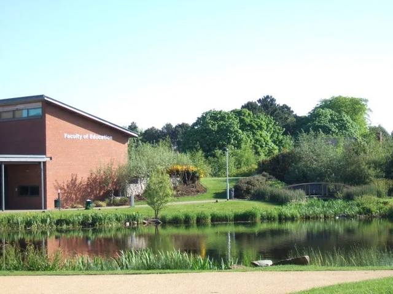
심리학 과목에 더해 사회과학·교육·영어 계열 과목도 들을 수 있다. 성·젠더를 직접 다루는 과목도 있는데, 한 학기만 다니는 학생이 들을 수 있는 과목은 봄학기에 몰려 있다. 가을에 가면 이 과목들을 들을 수 없다고 보는 게 안전하다.
| 생활권 | 읽는 방법 |
|---|---|
| 캠퍼스·옴스커크 | 기숙사·수업·도서관·체육시설 중심. 도보와 무료 셔틀을 조합한다. |
| 리버풀 | 가장 가까운 주요 도시 생활권. 후기의 이동시간은 열차만 약 30분부터 캠퍼스 출발 약 1시간까지 달라 출발점을 구분한다. |
| 맨체스터 | 공항 입국·도시 방문 선택지. 리버풀보다 이동이 길어 매일 생활권으로 잡기보다는 필요할 때 방문하는 편이 현실적이다. |
영국은 겨울엔 GMT, 여름엔 BST를 쓴다. 한국 시간이 각각 9시간, 8시간 빠르다. 겨울엔 해가 짧고 비바람이 잦아서 이에 맞는 옷이 필요하다. UPEI처럼 혹독하게 추운 겨울은 아니고, 춥기보다는 축축하고 어두운 겨울이다.
2. 캠퍼스와 옴스커크에서 생활하기목차로
Edge Hill에서의 하루는 캠퍼스 안에서 자고 수업 듣고, 장보기와 외식은 가까운 작은 시내에서 해결하는 식이다. 리버풀에 자주 갈 수는 있지만, 리버풀 시내 대학처럼 강의실을 나서자마자 번화가가 펼쳐지지는 않는다. 평일엔 도서관·공용 주방·운동시설을 오가고, 시내나 도시 나들이는 따로 시간을 내서 간다. 조용하게 지내기 좋다는 장점과, 늘 새로운 자극이 있지는 않다는 점을 같이 알고 고르면 된다.
2.1. 학교는 어떤 곳인가
학교는 1885년 리버풀에서 여성 교사를 길러내는 학교로 시작했다. 특정 종교 교단에 속하지 않은 여성 교원 양성기관이었고, 나중에 옴스커크로 옮겨 왔다. 지금 캠퍼스에 오래된 본관과 새 학습·체육시설이 함께 있는 것도 이런 역사 때문이다. 리버풀에도 Edge Hill이라는 동네가 있어서 그곳에 학교가 있다고 착각하기 쉬운데, 실제로 사는 곳은 옴스커크다.
교환학생에게 좋은 점은 캠퍼스 안에서 웬만한 생활이 다 된다는 것이다. 기숙사, 도서관, 식당·카페, 편의점, 세탁실, 체육시설, 공연장이 모두 한 캠퍼스에 있다. 수업 사이에 방에 들르거나, 저녁을 같이 해 먹고 다시 도서관에 가는 생활이 쉽다. 다만 캠퍼스 안에서만 지내면 만나는 사람과 가는 곳이 금방 굳어질 수 있다. 수업 밖 모임 하나, 캠퍼스 밖 단골 장소 하나쯤 만들어 두면 생활이 넓어진다.
2.2. 캠퍼스에서 자주 쓰게 될 장소
| 장소 | 하는 일 | 실제 이용 장면 |
|---|---|---|
| Catalyst | 도서관·개인 공부·조별 작업·학생지원 | 집중해서 읽을 때는 조용한 좌석, 발표를 맞춰볼 때는 그룹실을 쓴다. 건물은 학기 중 24시간 열지만 직원 상담 시간은 별도다. |
| The Hub | 식사·카페·간단한 쇼핑·약속 장소 | 수업 전후에 밥을 먹거나 친구와 만나는 중심 공간. 교내 식당과 민간 매장은 식사 패키지 적용 여부가 다르다. |
| Sports Centre | 헬스·수영·운동 수업·실내 스포츠 | 비가 오래 오는 주에도 운동 루틴을 유지할 수 있다. 회원권에 어떤 시설·수업이 포함되는지 구분해 고른다. |
| The Arts Centre | 영화·공연·코미디·오픈 마이크 | 멀리 나가지 않고 저녁 시간을 보내거나, 수업 밖 영어와 공연 문화를 접하는 장소. |
| 공용 주방 | 자취와 플랫 사람들과의 일상 접점 | 대단한 행사보다 저녁을 만들며 나누는 대화가 반복되기 쉽다. 조리도구·냉장고 칸·정리 방식은 입주 초에 맞춘다. |
Catalyst에는 개인 공부방, 그룹 스터디룸, 조용히 공부하는 구역의 예약 좌석이 있다. 지금 안내로는 하루 최대 3시간, 2주 전부터 예약할 수 있고, 예약 시간에서 15분이 지나도 안 오면 자리가 다른 사람에게 넘어갈 수 있다. 혼자 에세이를 쓰는 날엔 조용한 좌석, 둘이 발표를 준비하는 날엔 그룹실처럼 상황에 맞춰 고르면 된다. 오후 5시 이후엔 학생증이 있어야 들어갈 수 있으니 꼭 챙겨 나가자.
2.3. 옴스커크: 관광도시보다는 생활하는 시장 마을
옴스커크 중심가에는 시계탑, 오래된 교회, 작은 가게와 카페·펍이 모여 있다. 학교 안내로는 캠퍼스에서 시내까지 걸어서 약 15분, 역까지 약 20분이다. 캠퍼스 입구 기준이라 방에서 나서면 몇 분 더 걸린다. 시내가 작게 모여 있어서 장 보고, 커피 마시고, 공원에 잠깐 들렀다 오는 반나절 외출에 딱 좋다.
목요일과 토요일에는 전통 야외시장이 선다. 채소나 빵을 사러 가는 곳이면서 옷·생활용품·소품을 구경하는 재미도 있다. 시내 가까운 Coronation Park에는 호수와 산책로가 있어서, 교통비 들이지 않고 바람 쐬고 싶은 날 가기 좋다. 날 좋은 날 산책과 장보기를 묶으면, 기분 전환하러 매번 리버풀행 기차를 탈 필요가 없다.
목·토요일에 서는 Ormskirk Market은 거리 야외시장이고, Ormskirk Food & Drink Market은 여러 음식점과 바가 모인 실내 푸드홀이다. 뒤쪽은 장을 싸게 보는 곳이 아니라 여러 메뉴 중 골라 먹는 외식 장소다. 지도에서 찾거나 예산을 짤 때 둘을 헷갈리지 말자.
2.4. 식사 패키지가 있어도 주방을 쓰게 된다
2026년 봄 후기에 따르면 UniCard 식사 잔액은 교내 일부 식당과 Costa에서는 쓸 수 있었지만, Subway와 Morrisons에서는 쓸 수 없었다. 잔액은 계속 쌓이지 않고 기한이 지나면 사라지니, 받은 패키지의 사용 기한을 꼭 확인하자.
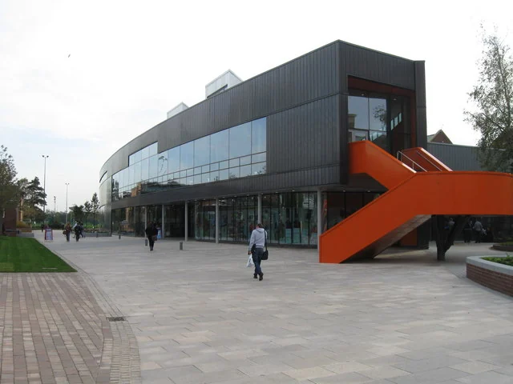
UniCard에 식사 잔액이 들어온다고 해서 기숙사 식당에서 하루 세 끼가 나온다는 뜻은 아니다. 2026년 봄 후기의 주 £50 패키지는 정해진 교내 매장에서 잔액을 쓰는 방식이었다. 그래서 수업 있는 날 점심은 학교에서 사 먹고, 아침·저녁·주말은 장을 봐서 해 먹는 식으로 섞게 된다. 잔액을 쓸 수 있는 곳과 먹고 싶은 메뉴가 있는 곳이 늘 같지도 않다.
학교가 소개하는 교내 식당·매장은 따뜻한 식사를 파는 EH Market, 간단히 먹는 Roots와 Garden 41, Costa 같은 카페, Subway, Morrisons 편의점 등이다. 채식·비건 메뉴도 있다. 다만 이곳 전부에서 식사 잔액을 쓸 수 있는 건 아니니, 계산할 때 잔액 사용 가능 여부를 확인하자. 편의점에서 식재료 사는 돈과 식당에서 한 끼 사 먹는 돈을 한데 묶어 생각하면 잔액 계산이 꼬이기 쉽다.
| 상황 | 생활 방식 예시 | 예산에서 구분할 것 |
|---|---|---|
| 오전·오후 수업 사이 | 캠퍼스 식당에서 점심을 먹고 도서관으로 이동 | 패키지 사용분과 별도 결제분 |
| 방에서 시작하는 아침 | 빵·오트밀·우유·요거트·과일처럼 준비가 짧은 음식 | 장이 겹쳐 냉장 식품을 버리지 않도록 보관 공간부터 확인 |
| 둘이 저녁을 만드는 날 | 같은 채소·단백질을 여러 끼에 나눠 쓰고 조리한 음식은 소분 | 기숙사비는 각자 내더라도 식재료는 공동 구매 가능 |
| 주말 하루 여행 | 아침·간단한 간식은 준비하고 현지에서 한 끼 외식 | 외출 때문에 못 쓴 식사 잔액을 현금처럼 다음 주 예산에서 빼지 않음 |
위 표의 식사 예시는 생활을 상상해 보도록 만든 예시다. 학교가 정한 식단이나 실제 파견자의 식단이 아니다.
2.5. 차 없이 장보기
예전 후기에 나온 가게가 지금도 다 있는 건 아니다. 한 후기에는 학기 말에 Poundland가 문을 닫았다고 적혀 있어서, 이 가이드에서는 장보기 장소로 넣지 않았다.
급한 우유·빵·간식은 교내 편의점에서 사고, 며칠 먹을 식재료와 생활용품은 시내에 나갈 때 한꺼번에 사는 게 편하다. 후기에 나온 시내 슈퍼마켓은 Aldi, Morrisons, M&S 등이고, 학교도 시내 슈퍼마켓과 개인 상점을 장보기 장소로 안내한다. 어디가 무조건 제일 싸다고 정하기보다, 자주 사는 물건의 단위가격을 비교해 보면 생활비를 아끼기 쉽다.
걸어서 장을 보면 가격보다 무게가 더 문제다. 첫날부터 큰 세제, 물, 쌀, 냄비를 한꺼번에 사면 들고 오는 길이 고생이다. 처음엔 세면도구, 침구, 간단한 먹을거리만 사고, 공용 주방에 이미 있는 조리도구와 냉장고·냉동고 공간을 확인한 뒤에 더 사는 게 낫다. 마트 배달을 쓴다면 물건값뿐 아니라 최소 주문 금액, 배송비, 기숙사에서 어디로 받는지도 같이 보자.
한국 음식은 매 끼니 한국식으로 먹느냐, 가끔 익숙한 맛을 보충하느냐에 따라 비용 차이가 크다. 평소엔 현지 슈퍼에서 쉽게 구하는 재료로 해 먹고, 꼭 필요한 양념만 따로 챙기면 해 먹을 수 있는 요리가 많아진다. 아시아 식료품점은 재고나 배송 지역을 아직 확인하지 못해서 특정 가게 이름은 넣지 않았다.
2.6. 셔틀과 열차를 어떻게 조합하는가
EdgeLink EL1은 옴스커크 버스 터미널과 캠퍼스를 오간다. 학생증을 보여주면 무료다. 캠퍼스 안에서는 기숙사 단지인 Forest Court와 Palatine Court 사이 정류장, 그리고 Creative Edge 정류장에 선다. 장을 많이 본 날 시내에서 돌아올 때 특히 유용하다. 지금은 평일 낮에 20분 간격으로 다닌다.
평일처럼 주말에도 셔틀이 있다고 생각하면 곤란하다. 토·일요일과 공휴일에는 정규 운행이 없고, 입학 행사나 오픈데이 때만 예외로 다닌다. 밤늦게까지 다니는 날도 수요일뿐이다. 겨울방학과 부활절 방학 중 일부 기간에도 안 다니니, 주말에 장을 보거나 여행에서 돌아올 때는 시내에서 기숙사까지 걸어갈 각오를 하는 게 좋다. 시간표에 Bank Holiday라고 적혀 있으면 공휴일 시간표를 보면 된다.
리버풀에 갈 때는 방 → 옴스커크 역 → Liverpool Central 역 → 목적지 순으로 움직인다. 기차만 타는 시간은 직통으로 35분 안팎이지만, 방에서 나서는 것부터 치면 더 걸린다. 시내 중심에 도착하면 쇼핑, 박물관, 식당을 하루에 묶어 다니기 좋다. 맨체스터처럼 더 먼 도시에 갈 때는 갈아타는 열차와 돌아오는 막차까지 미리 확인하자. 그때그때 왕복표를 살지, 하루 무제한 승차권이나 학생 정기권을 살지는 얼마나 자주 가느냐에 따라 달라진다.
2.7. 운동과 저녁 시간을 채우는 방법
스포츠센터에는 25m 수영장, 헬스장, 실내 코트와 여러 운동 수업이 있고, 밖에는 육상 트랙, 구기장, 산책 겸 운동할 수 있는 코스가 있다. 대표팀에 뽑혀야만 운동할 수 있는 곳이 아니다. 개인 회원권이나 시설별 이용권으로 운동하는 것과 학교 대표팀 활동은 따로다. 하고 싶은 운동을 먼저 정하고 그 운동의 예약 방법, 장비, 요금을 확인하는 게 짧게 머무는 학생에게 맞다.
Arts Centre의 무료 영화와 학생 공연은 아래 3장에서 시간과 예약 방법까지 자세히 다룬다. 멀리 안 나가고 저녁을 보내고 싶을 때 좋은 선택지다.
친구를 사귀는 데 술자리만 있는 건 아니다. 도서관 그룹실에서 과제를 같이 하거나, 운동 수업·영화·동아리 행사에 같은 시간에 꾸준히 나가는 방법도 있다. 큰 행사 한 번에 깊이 친해지려 하기보다 여러 번 얼굴을 마주칠 곳을 만드는 게 짧은 교환 기간에 더 잘 맞는다. 활동은 Student Life Portal, Students’ Union 행사, Arts Centre 프로그램을 각각 따로 찾아보면 더 많이 보인다.
2.8. 봄과 가을의 옷차림·생활감
영국도 9~12월은 가을에서 초겨울, 1~5월은 겨울에서 봄으로 넘어가는 때다. 봄학기에 간다고 1월부터 봄옷을 입는 건 아니다. 가까운 해안 관측소인 Crosby의 1991~2020년 평균을 보면 1월 최고·최저 기온은 약 7.5℃·2.8℃, 5월은 15.9℃·8.3℃다. 9월은 17.7℃·11.2℃, 12월은 8.0℃·3.1℃다. 그날그날 예보가 아니라 이 지역 날씨가 대략 어떤지 보여주는 평균값이다.
실제로 지낼 때는 기온보다 비, 바람, 젖은 길이 더 신경 쓰인다. 모자 달린 방수 겉옷, 겹쳐 입을 옷, 오래 걸어도 편하고 잘 젖지 않는 신발이 쓸모 있다. 가을학기는 갈수록 해가 짧아지고, 봄학기는 추울 때 시작해서 돌아올 즈음엔 해가 길어진다. 흐린 날엔 도서관·체육관·공연장, 맑은 날엔 장보기와 공원 산책처럼 날씨별 일과를 두 가지 정도 만들어 두면 날씨 때문에 방에만 있는 날이 줄어든다.
이 절의 자료와 확인 범위
2026년 11월 6일 확인. 아래는 학교, 지자체, 교통, 기상 관련 공식 자료다. 식사 예시나 장보기 순서, 하루 동선은 이 자료를 바탕으로 만든 예시이고 실제 파견자의 일정이 아니다.
- Edge Hill 학교 역사 — 1885년 여성 교원교육기관 출발과 옴스커크 이전.
- 국제학생 대상 학교·캠퍼스 소개 — 캠퍼스 내 생활시설의 구성.
- Catalyst 시설·출입 안내 및 학습 공간 예약 — 24시간 개방과 상담 시간의 차이, 예약 규칙.
- 교내 식음료·쇼핑·학생생활 — 식당 종류, 캠퍼스 행사, 시내 도보 생활.
- West Lancashire의 옴스커크 소개 — 목·토 시장, 시계탑·공원 등 마을 특징.
- Ormskirk Food & Drink Market 공식 안내 — 야외 장터와 구분되는 실내 식음 공간.
- EdgeLink·교통 안내 — 무료 조건, 정류장, 주말·방학 운행 제한. 철도 사업자 여정 검색 — 리버풀까지 약 33–37분 직통 사례; 여행일 시간표는 별도.
- 스포츠 시설과 참여 방식 — 수영장·운동시설, 회원권·팀 활동 구분.
- Arts Centre 공식 프로그램 — 공연 종류와 Free Film Friday.
- Met Office, Crosby 장기 기후평균 — 1991–2020 평균. 옴스커크 자체 관측값이나 2028년 예보가 아님.
- 단국대 2026년 봄 파견후기 — 기존 가이드에서 확인한 주 £50 식사와 장보기 경험. 과거 개인 경험으로 구분.
3. 쉬는 날의 Edge Hill: 캠퍼스, 시장 마을, 리버풀목차로
Edge Hill에서의 여가는 거리에 따라 세 가지로 나뉜다. 수업이 끝나면 캠퍼스에서 영화나 공연을 보고, 반나절이 비면 옴스커크 시장과 카페를 걷고, 하루가 비면 기차로 리버풀에 가서 박물관, 음악, 쇼핑, 퀴어 문화를 즐길 수 있다. 매주 멀리 여행하지 않아도 생활 속에 새로운 경험을 넣기 쉽다는 게 이 지역의 장점이다. 대신 리버풀에서 늦게까지 놀다 캠퍼스로 돌아오려면 시내에 사는 학생보다 미리 계획해야 한다.
3.1. 멀리 나가지 않는 저녁
캠퍼스 안의 The Arts Centre에는 Rose Theatre와 Studio Theatre라는 두 공연장이 있다. 연극, 무용, 코미디, 음악, 영화를 올리고, EHU 학생용 무료 회원으로 가입하면 일부 공연을 무료 티켓으로 볼 수 있다. 모든 공연을 그냥 가서 볼 수 있는 건 아니니, 보고 싶은 공연의 예매 화면에서 학생 혜택과 남은 좌석을 확인하자.
특히 Free Film Friday는 금요일 저녁 7시에 Studio Theatre에서 하는 학생 대상 무료 영화 상영이다. 표나 예약 없이 들어갈 수 있고, 간식, 술이 아닌 음료, 담요를 가져가도 된다. 기숙사에서 저녁 먹고 걸어가서 영화 한 편 보고 돌아오는 소박한 금요일을 보내기 좋다. 상영작은 매주 안내를 보면 된다. 영어 대사가 빨라서 힘들다면 처음엔 이미 줄거리를 아는 영화부터 골라보는 것도 방법이다.
공연을 보는 것 말고도 오픈마이크, 시 낭독, 학생 공연처럼 직접 참여하는 프로그램도 있다. 무대에 서지 않더라도 친구 공연을 보러 가거나 같은 행사에 꾸준히 가다 보면 새로운 사람을 만나게 된다. 관광지와 달리 이런 곳에서는 수업이나 기숙사에서 본 학생을 다시 마주칠 가능성이 높다.
3.2. 옴스커크는 어떤 동네인가
옴스커크는 큰 도시라기보다 걸어서 다 돌아볼 수 있는 시장 마을이다. 시계탑을 중심으로 가게, 카페, 펍이 모여 있고, 오래된 교회, 아기자기한 거리, Coronation Park를 함께 둘러볼 수 있다. 목·토요일에 서는 거리 시장은 장보기뿐 아니라 빵, 치즈, 꽃, 생활용품 구경하는 재미도 있다. 관광 명소 한 곳에 가는 것보다 동네가 어떻게 돌아가는지 더 잘 알 수 있다.
이름이 비슷한 Ormskirk Food & Drink Market은 거리 시장이 아니라 실내 푸드홀이다.시장 이름 구분 Moorgate에 있고, 여러 음식점 메뉴 중 골라서 한 공간에 앉아 먹는 구조다. 목요일부터 일요일까지 열고, 퀴즈, 코미디, 음악 공연 같은 행사도 따로 연다. 장 보러 나간 김에 간단히 먹을 때, 또는 공연 시간에 맞춰 놀러 갈 때 쓰면 된다.
토요일에 시계탑 주변 시장 구경 → 점심 → Coronation Park 산책 → 장 보고 귀가. 2~4시간 정도 여유롭게 보내는 코스다. 돈을 아끼고 싶은 날엔 시장과 공원만 둘러보고 밥은 기숙사에서 먹어도 된다. 비가 오면 야외 일정을 줄이고 푸드홀이나 카페에 더 머물면 된다.
3.3. 리버풀: 축구표가 없어도 충분한 도시
옴스커크에서 Liverpool Central 역까지 직통열차로 약 33~37분 걸린다. 이건 역에서 역까지 시간이라, 캠퍼스에서 역까지, 내려서 목적지까지 걷는 시간을 더해야 한다. 리버풀은 축구와 비틀스로 유명하지만, 경기표나 유료 체험이 없어도 충분히 즐길 수 있다. 무료 박물관과 미술관, 항구 산책을 묶으면 교통비와 밥값 정도로 하루를 보낼 수 있다.
| 관심 | 장소와 경험 | 돈·이동에서 볼 점 |
|---|---|---|
| 도시·사람의 이야기 | Museum of Liverpool: 항구 도시의 역사와 일상·대중문화를 다룬다. 워터프런트 산책과 연결하기 좋다. | 일반 입장 무료 안내. 특별 프로그램은 별도 조건을 본다. |
| 그림·사진·조용한 실내 | Walker Art Gallery와 주변 문화시설. 그림을 천천히 보고 마음에 드는 작품을 이야기하는 식의 방문이 가능하다. | 상설 관람 무료 안내. 특별전 요금은 따로 확인한다. |
| 강변과 도시 풍경 | Royal Albert Dock·Pier Head: 부두 주변을 걷고 건축·강변 풍경을 본다. 사진·산책 자체로도 일정이 된다. | 외부 산책에 입장권은 필요 없다. 강바람이 강하면 실내와 번갈아 간다. |
| 음악 | 비틀스 관련 전시·투어 또는 작은 공연장 라이브. 전시는 내용을 따라 보는 활동, 라이브는 현장 분위기를 즐기는 활동이다. | 각 장소의 공연·입장료가 별도다. 한 번 외출에 유료 활동을 모두 넣을 필요는 없다. |
| 쇼핑·음식 | 시내 상점과 식당을 돌아보며 옴스커크에 없는 선택지를 이용한다. | 관광과 생활용품 쇼핑을 같은 날 묶으면 왕복 이동을 줄일 수 있다. |
오전에 기차로 출발 → 박물관 한 곳(1~2시간) → 점심 → 부두 산책 → 카페나 쇼핑 → 저녁 전에 귀가. 공연을 보러 가는 날이면 낮 일정을 줄이고, 공연이 끝난 뒤 탈 기차와 옴스커크 역에서 캠퍼스까지 갈 방법부터 정해 두자. 리버풀에서 오는 막차가 있어도 캠퍼스 셔틀은 이미 끊겼을 수 있다.
3.4. 퀴어 문화를 만나는 방식
리버풀 시내 Stanley Street 주변은 Pride Quarter라고 불리는 퀴어 거리로, LGBTQ+ 바, 클럽, 드래그 쇼, 가라오케가 모여 있다. 밤 문화만 있는 건 아니다. 영국 관광청은 Museum of Liverpool의 LGBTQIA+ 오디오 가이드 코스와 Homotopia도 소개한다. Homotopia는 퀴어·트랜스 예술가들의 연극, 무용, 영화, 전시, 토크가 열리는 예술 축제로, 작품마다 몸, 관계, 정체성을 다루는 방식이 다양하다.
2026년 기준으로 리버풀 프라이드(Pride in Liverpool)는 7월, Homotopia는 11월에 열렸다. 그래서 가을학기에 가면 Homotopia를 볼 수 있지만, 봄학기에만 머물면 여름 프라이드는 겪지 못한다. 어디에 갈지는 관심 가는 대로 고르면 된다. 술집이나 시위·사회운동에 참여해야만 현지 퀴어 문화를 접할 수 있는 건 아니다. 나이 제한, 입장 조건, 촬영 규칙은 각 행사 안내를 따르자.
3.5. 도시 밖으로 나가고 싶을 때
| 방식 | 후보 | 현실적인 외출 규모 |
|---|---|---|
| 철도+도보 | Crosby Beach·Another Place: 바다를 바라보는 철 조각상과 넓은 해안 풍경. | Blundellsands & Crosby 등 역에서 해안까지 걸을 수 있다. 옴스커크와 같은 철도 지선은 아니어서 환승을 조회한다. 조수와 바람을 보고 바닷물·갯벌 쪽 깊숙이 따라가지 않는다. |
| 철도 당일여행 | Chester·Manchester: 옴스커크·리버풀과 다른 도시 분위기를 보는 선택지. | Chester는 Merseyrail 환승, Manchester는 도시 간 열차까지 포함해 계획한다. 역·박물관·가게의 영업시간을 하루 단위로 묶는다. |
| 학교 프로그램·차량 | Lake District처럼 도시 바깥 자연 풍경을 여러 곳 보는 여행. | 단국대 후기에는 국제처 근교 여행 사례가 있다. 학교 당일투어가 열리면 개별 환승과 마지막 구간 이동을 줄일 수 있다. 매학기 같은 목적지가 나온다는 뜻은 아니다. |
겨울엔 실내 공연이나 박물관에 짧은 산책을 섞고, 봄이 되어 해가 길어지면 바닷가나 공원에 더 자주 나가는 게 자연스럽다. 가을학기엔 개강 행사가 끝나면 10~11월에 문화 행사가 이어지고, 12월엔 시험, 퇴실 준비, 연말 나들이가 겹칠 수 있다. 여행을 많이 다녀야만 교환생활이 알찬 건 아니다. 한 동네의 시장이나 공연장을 여러 번 찾아가는 것도 한 학기 머무는 사람만 할 수 있는 경험이다.
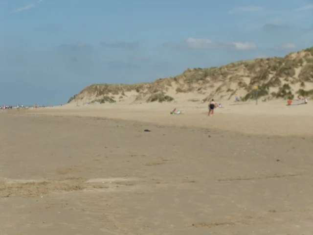
이 절의 자료와 확인 범위
2026년 11월 7일 확인. 장소와 제도는 공식 기관 안내를 바탕으로 했고, 코스 순서와 걸리는 시간은 예시로 짠 것이다. 2026년 행사는 이런 문화활동이 있다는 예시일 뿐, 2028년 일정은 아니다.
- Edge Hill Arts Centre · Free Film Friday 시간·예약·반입 안내. 학생 문화생활 · 학생 회원제·공연 참여.
- West Lancashire의 Ormskirk 안내 · 시장·시계탑·공원. Food & Drink Market · 별도 실내 시설과 영업일.
- Northern 열차 조회 · 역 간 이동 사례. Merseyrail 노선·환승 안내 · 현재 여행일에는 새 시간표 사용.
- VisitLiverpool 무료 문화시설·산책 안내 · 박물관·갤러리·워터프런트.
- VisitBritain LGBTQIA+ 가이드 · Pride Quarter·오디오 트레일·Pride·Homotopia. Homotopia 공식 홈페이지 · 개별 작품과 최신 일정.
- Sefton Council의 Crosby 접근 안내 · 역·도보 구간. National Rail 당일여행 안내 · 조각상·해안 방문.
4. 교류·학업·생활 경험목차로
단국대 후기에서 공통으로 나온 교류 기회는 Global Café와 국제처가 운영하는 당일 여행이다. Global Café는 정해진 주제로 모여 다른 교환학생들과 이야기하는 모임이다. 국제처 여행으로 Chester나 Windermere 같은 근교에 다녀온 사례가 있다. 여행지, 횟수, 신청 방법은 학기마다 달랐다.
버디 프로그램 경험은 사람마다 달랐다. 2026년 봄 후기 한 편은 신청해서 현지 학생과 연결됐다고 했고, 다른 한 편은 따로 버디 활동이 없었다고 했다. 자동으로 배정되는 게 아닐 수 있으니, 도착 전에 신청 방법을 확인해 두자.
체육시설 만족도가 높았다. 봄학기 후기 두 편 모두 교환학생용 단기 이용권(약 £35)을 언급했는데, 기간은 한 편은 3개월, 다른 한 편은 4개월이라고 적어서 정확한 건 현지에서 확인해야 한다. 수영장, 헬스장, 예약해서 듣는 운동 수업을 이용했다.
강의자료와 과제 안내는 Blackboard로 받았다. 수업에서는 세미나 토론에서 말하고 조별 과제를 조율하는 영어와, 에세이를 쓰는 영어가 둘 다 필요하다. 그러니 시험 점수 준비와 함께 짧게 의견 말하기, 읽은 글 요약하기도 연습해 두면 좋다. 교환학생에게 연구실 인턴이나 연구보조 자리를 따로 주는 제도는 찾지 못했다.
후기를 현재 규정으로 바꾸지 않은 항목
- 일부 글의 ‘시험 없음’은 그 작성자의 수강 과목에 해당한다.
- 학점 환산·출석·오리엔테이션 참석은 후기의 개인 판단보다 현재 학교 규정이 우선이다.
- 수리 지연·오래된 시설은 경험 사례다. 입주 때 결함을 기록하고 공식 수리 창구로 접수할 수 있다.
- 은행·입국 서류에는 실제 정보를 적는다. 후기에 있는 임의 작성 요령을 안내 절차로 옮기지 않았다.
5. 젠더 지원과 커뮤니티목차로
학교 학생지원 페이지에 트랜스젠더 학생 안내가 따로 있다. 원하는 이름으로 학생증과 기록을 바꾸는 법, 교수에게 알리는 법, 상담, 학생 모임까지 안내한다. 다양성을 존중한다는 선언만 있는 학교보다 실제로 찾아갈 창구가 구체적이다.
| 상황 | 확인한 지원 |
|---|---|
| 사용 이름 | Student Support를 통해 학생 기록·UniCard의 이름 표시를 상의할 수 있다. 선호 이름과 법적 이름 변경은 구분한다. |
| 수업에서의 이름 | 개인 튜터·학과 직원에게 알리거나 이름 변경 양식으로 전달할 수 있다. |
| 정체성 탐색·전환 | 학교에 공개를 의무화하지 않는다고 안내한다. Mental Health & Wellbeing 상담 연결 가능. |
| 학생 커뮤니티 | LGBTQ+ 학생 대표·LGBTQ+ Society·Queer Activities 관련 안내가 있다. 실제 학기 행사와 운영진은 학생회 최신 목록에서 확인. |
| 대명사·언어 | 공식 안내는 대명사를 묻고 존중하며 they/them·Mx·partner 등 포괄적 표현을 소개한다. |
| 지역 지원 | Merseycare Trans Support Service·Gendered Intelligence·LGBT Foundation 등 외부 자원을 안내한다. |
학교의 LGBTQI+ 페이지에는 프라이드 행사와 지역 단체 정보가 있다. 학생회도 EHRC 지침이 바뀐 뒤 낸 입장문에서 트랜스·젠더 비순응 학생을 계속 지원하겠다고 밝혔다.
5.1. 숙소·시설에서 구분할 점
남녀가 같은 플랫에서 지냈다는 파견 후기는 있다. 하지만 트랜스·논바이너리 학생이 방 배정을 고를 수 있는지, 따로 쓰는 플랫이 있는지, 화장실·탈의실을 지금 어떤 기준으로 쓰는지는 후기만으로는 알 수 없다. 방 배정은 숙소 담당 부서(Accommodation)와 학생지원팀(Student Support)에 원하는 조건을 구체적으로 말해서 정하는 게 맞다. 모든 시설을 성별 구분 없이 쓸 수 있는지는 아직 확인하지 못했다.
공식 지원 제도가 있다는 건 확인된 사실이다. 다만 실제 커뮤니티가 얼마나 큰지, 모임에 몇 명이 오는지, 학생들 분위기가 어떤지까지 말해주지는 않는다.
6. 수강 방식과 과목 선택목차로
교환학생은 교환학생용 과목 목록(Module Catalogue)에서만 과목을 고를 수 있다. 학과 홈페이지에 소개된 과목을 다 들을 수 있는 건 아니다. 학부 과목은 하나에 20 UK credits이고, 후기를 보면 보통 3과목을 들었다.
2026년 봄과 2025년 가을 후기를 보면 듣고 싶은 과목 6개를 순서대로 써서 내면 그중 3개가 배정됐다. 첫 수업을 들어보고 정해진 기간 안에 바꾼 사례도 있다. 들은 학점을 단국대 학점으로 어떻게 바꾸는지, 전공으로 인정되는지는 미리 학과에 확인해야 한다.
| 구분 | 알아둘 점 |
|---|---|
| 학과를 섞는 경우 | 경영·미디어 등 서로 다른 분야를 함께 들은 후기가 있다. 심리·사회과학·종교 조합도 시간표와 선수이수 심사를 거쳐야 한다. |
| 3000번대 심리학 | 별표(*) 과목은 영국 학부 Level 5 또는 동등 수준의 심리학 이수를 요구한다. 한국에서 들은 심리학 과목과 영문 강의계획서가 판단 자료다. |
| 수업 형식 | 후기에는 대면 강의 2시간+세미나 1시간이 반복된다. 과목별 현재 분반의 대면·온라인 비율은 공개 카탈로그에 표시되지 않는다. |
| 평가 | 후기에서 시험 없이 에세이·팀 발표로 평가한 수업이 많았지만, 심리학에는 TLA(시간제한평가)가 표시된 과목도 있다. |
| 학업 지원 | 2026 봄 후기에서 1:1 에세이 지원을 유용하게 이용했다고 설명한다. 실제 지원 방식은 도착 후 국제처·학습지원 안내를 따른다. |
현재 확인된 봄 한 학기 직접 과목은 SPY3145와 REL3007 두 개다. 둘에 심리학 한 과목을 붙이는 조합이 더 현실적이다. ECW3000은 연간 과목이므로 세 번째 봄 과목으로 계산하지 않는다.
7. 과목 사전목차로
현재 공식 교환학생 목록의 Psychology 19개는 모두 수록했다. 가을 3개, 봄 9개, 연간 7개다. 아래 카드 22개는 이 19개와 성·젠더를 직접 다루는 타과 3개이며, 이어지는 타과 목록 54개까지 합치면 76개다.
타과 목록은 심리·정신건강·발달·성·젠더·관계와 연결되는 과목을 골라 정리한 것이다. 학과 전체 교육과정이나 모든 교환 가능 과목을 뜻하지 않는다. 이번 대조에서 젠더를 일부 다루는 역사·디자인·공연·미디어 과목과 가족정책·언어·몸의 경험 과목 8개를 추가했다. 통합 과목 검색에서도 확인할 수 있다.
학기는 현재 교환학생 목록의 Semester 1·2·Full Year 표기를 따랐다. 이 목록에는 학년도별 분반 기록이 없어 2025·2026·2027 개설 배지는 붙이지 않았다. 공식 목록과 대조하기
이 목록에는 심리학 과목 19개와 성·젠더를 직접 다루는 과목 3개가 들어 있다. 학교 전체 교환학생 과목이 아니다. 심리학은 봄 9개, 가을 3개, 1년짜리 7개이고, 성·젠더 과목은 봄 2개, 1년짜리 1개다. 아래 다른 학과 과목도 같이 보면 고를 폭이 넓어진다. 과목 이름을 누르면 공식 설명 요약과 이해를 돕는 예시가 열린다.
22과목
봄 1–5월 · 영국 Semester 2 SPY3145 · 아동·청소년의 섹슈얼리티
Childhood Sexuality
사회과학 · 3학년 수준. 성적 지향·자기이해가 직접 주제이며 성별정체성 발달 전담 수업은 아니다. 사회적 시선과 발달을 함께 읽는 과목이다.
공식 설명 요약
청소년이 이성애 규범 속에서 성을 이해하고 성적 정체성을 형성하는 과정을 다룬다.
친구들이 이성 연애만 당연하게 말하는 환경에서, 같은 성에게 끌리는 청소년이 자신의 감정을 어떻게 이해하고 이름 붙일까? 보호와 통제의 경계는 어디일까?
예시는 실제 강의 주차·과제·교수 발언이 아니다. 공식 교환 과목표 ↗
봄 1–5월 · 영국 Semester 2 REL3007 · 젠더·섹슈얼리티와 기독교
Gender, Sexuality and Christianity
교육/종교 계열 · 3학년 수준. 개인의 정체성과 경험을 다루지만 종교·신학의 비중이 크다.
공식 설명 요약
페미니스트·퀴어 신학과 LGBT·인터섹스 당사자의 경험을 통해 기독교와 성의 관계를 읽는다.
종교적 믿음과 자신의 성별정체성·사랑이 충돌한다고 느끼는 사람은 두 경험을 어떻게 해석할까? 같은 성서도 왜 다른 결론으로 읽힐까?
예시는 실제 강의 주차·과제·교수 발언이 아니다. 공식 교환 과목표 ↗
연간 · 한 학기 제외 ECW3000 · 섹슈얼리티·젠더·정체성
Sexualities, Genders and Identities
영어·창작 · 3학년 수준. 현재 Full Year Modules: 한 학기 파견 기본 후보에서 제외. 권력·평등·사회변화도 공식 설명에 포함된다.
공식 설명 요약
동성 욕망·젠더 다양성의 문학·언어적 재현을 퀴어 이론과 사회·정치적 맥락에서 분석한다.
같은 욕망을 일기에서는 숨기고 소설에서는 드러낼 때, 단어와 서술 방식은 어떻게 달라질까? 자신의 경험에 붙이는 이름이 달라지면 이야기도 달라질까?
예시는 실제 강의 주차·과제·교수 발언이 아니다. 공식 교환 과목표 ↗
가을 9–12월 · 영국 Semester 1 PSY1112 · 인지·생물심리학 입문
Introduction to Cognitive & Biological Psychology
1학년 · ^ 1월 TLA 표시
공식 설명 요약
지각·기억과 행동의 생물학적 기초.
같은 장면을 보고도 기억이 달라지는 이유를 감각 처리와 기억 과정으로 설명해 볼 수 있다.
예시는 실제 강의 주차·과제·교수 발언이 아니다. 공식 교환 과목표 ↗
가을 9–12월 · 영국 Semester 1 PSY3122 · 물질 오용의 심리학
Psychology of Substance Misuse
3학년 · * 선수이수
공식 설명 요약
보상·학습·약물사용·심리적 개입.
기분을 좋게 하려고 시작한 행동이 불편한 감정을 피하기 위한 행동으로 바뀌는 과정을 비교한다.
예시는 실제 강의 주차·과제·교수 발언이 아니다. 공식 교환 과목표 ↗
가을 9–12월 · 영국 Semester 1 PSY3129 · 성격과 개인차
Personality and Individual Differences
3학년 · * 선수이수
공식 설명 요약
성격·지능 이론과 개인차 측정.
성격검사 결과가 일상 행동을 얼마나 설명하며, 상황이 바뀌어도 점수가 같은 의미를 갖는지 생각해 볼 수 있다.
예시는 실제 강의 주차·과제·교수 발언이 아니다. 공식 교환 과목표 ↗
봄 1–5월 · 영국 Semester 2 PSY1111 · 성격·사회·발달심리 입문
Introduction to Personality, Social and Developmental Psychology
1학년 · ^^ 5월 TLA 표시
공식 설명 요약
성격·사회·발달심리의 기초.
혼자 있을 때와 집단 안에 있을 때 다른 행동을 성격과 사회적 영향으로 각각 설명해 본다.
예시는 실제 강의 주차·과제·교수 발언이 아니다. 공식 교환 과목표 ↗
봄 1–5월 · 영국 Semester 2 PSY2112 · 발달심리학
Developmental Psychology
2학년 · 구판과 달리 현재 봄 구획
공식 설명 요약
영아기·아동기 인지발달과 이론.
어린아이가 타인의 관점을 이해하는 과정에서 어떤 변화가 일어나는지 질문해 볼 수 있다.
예시는 실제 강의 주차·과제·교수 발언이 아니다. 공식 교환 과목표 ↗
봄 1–5월 · 영국 Semester 2 PSY2113 · 사회심리학
Social Psychology
2학년 · ^^ 5월 TLA 표시
공식 설명 요약
사회심리 이론의 비판적·현실적 적용.
집단 소속감이 개인의 판단을 바꾸는 장면을 분석할 수 있다. 성이나 연애만을 다루는 수업은 아니다.
예시는 실제 강의 주차·과제·교수 발언이 아니다. 공식 교환 과목표 ↗
봄 1–5월 · 영국 Semester 2 EDP3104 · 특수교육 요구
Special Educational Needs
3학년 · 교육심리
공식 설명 요약
교육적 지원·포용·발달장애와 학교 정책.
같은 수업에서도 누구에게는 장벽이 되는 환경을 어떻게 바꿀지 연구 근거와 함께 생각한다.
예시는 실제 강의 주차·과제·교수 발언이 아니다. 공식 교환 과목표 ↗
봄 1–5월 · 영국 Semester 2 PSY3131 · 가상세계의 심리학
Psychology and the Virtual World
3학년 · * 선수이수
공식 설명 요약
게임·인터넷·SNS의 심리 경험.
온라인 아바타가 현실에서 표현하기 어려운 자기 모습을 시도하는 공간이 될 수 있을까? 이 질문은 이해용 예시이며 젠더 단원이 확정된 것은 아니다.
예시는 실제 강의 주차·과제·교수 발언이 아니다. 공식 교환 과목표 ↗
봄 1–5월 · 영국 Semester 2 PSY3142 · 사회신경과학
Social Neuroscience
3학년 · * 선수이수
공식 설명 요약
상호작용·타인 이해의 기제.
상대의 표정과 행동에서 의도를 추측하는 과정, 공감과 오해를 연구하는 방법을 떠올릴 수 있다.
예시는 실제 강의 주차·과제·교수 발언이 아니다. 공식 교환 과목표 ↗
봄 1–5월 · 영국 Semester 2 PSY3140 · 법정심리학
Psychology in the Courtroom
3학년 · * 선수이수 · ^^ 5월 TLA
공식 설명 요약
배심·증언·신뢰성·법정 판단.
말투나 외모가 증언의 신뢰도 판단을 바꾸는지 분석할 수 있다.
예시는 실제 강의 주차·과제·교수 발언이 아니다. 공식 교환 과목표 ↗
봄 1–5월 · 영국 Semester 2 PSY3136 · 심리학의 성찰과 미래 방향
Reflections and Future Directions
3학년 · * 선수이수 · 응용 아이디어 발표
공식 설명 요약
심리학의 역사·방법론과 응용 기획.
실험만으로 이해하기 힘든 관계 경험을 대화 분석이나 현장 관찰로 연구할 수 있을까?
예시는 실제 강의 주차·과제·교수 발언이 아니다. 공식 교환 과목표 ↗
봄 1–5월 · 영국 Semester 2 PSY3150 · 임상심리학과 정신건강
Clinical Psychology & Mental Health
3학년 · * 선수이수
공식 설명 요약
정신건강의 임상·의학 모델 비판.
진단 범주가 경험을 이해하는 데 주는 도움과 놓치는 맥락을 비교할 수 있다.
예시는 실제 강의 주차·과제·교수 발언이 아니다. 공식 교환 과목표 ↗
연간 · 한 학기 제외 PSY1011 · 응용심리학 입문
Introduction to Applied Psychology
1학년 · 연간 과목
공식 설명 요약
응용 분야·진로·연구 활용.
교육·건강·직장에 같은 심리학 지식을 적용할 때 역할이 어떻게 달라지는지 비교한다.
예시는 실제 강의 주차·과제·교수 발언이 아니다. 공식 교환 과목표 ↗
연간 · 한 학기 제외 PSY1109 · 응용심리학 기초 역량
Essential Skills in Applied Psychology
1학년 · 연간 과목
공식 설명 요약
학술 읽기·쓰기·협업·자기성찰.
논문 주장을 읽고 근거의 강도와 한계를 구분하는 연습을 생각해 볼 수 있다.
예시는 실제 강의 주차·과제·교수 발언이 아니다. 공식 교환 과목표 ↗
연간 · 한 학기 제외 PSY1116 · 심리학 조사방법
Investigative Methods in Psychology
1학년 · 연간 과목
공식 설명 요약
실험설계·자료수집·기초통계.
질문을 연구 가능한 가설로 바꾸고 자료를 수집하는 순서를 익힌다.
예시는 실제 강의 주차·과제·교수 발언이 아니다. 공식 교환 과목표 ↗
연간 · 한 학기 제외 EDP1001 · 교육심리학 입문
Introduction to Educational Psychology
1학년 · 연간 과목
공식 설명 요약
학습·동기·교육 장벽.
학습 의욕이 낮아 보이는 학생에게 과제 난도와 환경이 어떤 영향을 주는지 생각한다.
예시는 실제 강의 주차·과제·교수 발언이 아니다. 공식 교환 과목표 ↗
연간 · 한 학기 제외 PSY1010 · 웰빙의 심리학
The Psychology of Wellbeing
1학년 · 연간 과목
공식 설명 요약
웰빙·회복탄력성·응용심리.
웰빙을 단순히 증상이 없는 상태와 같은 뜻으로 볼 수 있는지 비교한다.
예시는 실제 강의 주차·과제·교수 발언이 아니다. 공식 교환 과목표 ↗
연간 · 한 학기 제외 PSY2116 · 연구방법과 자료분석
Research Methods & Data Analysis
2학년 · 연간 과목
공식 설명 요약
양적·질적·혼합 연구와 분석.
개인 경험을 인터뷰로 이해하는 연구와 설문 점수로 비교하는 연구의 차이를 생각한다.
예시는 실제 강의 주차·과제·교수 발언이 아니다. 공식 교환 과목표 ↗
연간 · 한 학기 제외 EDP2004 · 교수·학습·수업의 심리학
The Psychology of Teaching, Learning & Instruction
2학년 · 연간 과목
공식 설명 요약
교수학습 이론과 실제 수업.
학습원리를 사용한 짧은 수업을 설계하고 효과를 되돌아볼 수 있다.
예시는 실제 강의 주차·과제·교수 발언이 아니다. 공식 교환 과목표 ↗
선수과목과 평가 기호
* 영국 심리학 학부 Level 5 또는 그만한 수준의 심리학 과목을 이미 들었어야 한다. 상담학 전공이라는 것만으로는 부족할 수 있고, 실제로 들은 과목을 보고 판단한다.
^ 1월에 시간제한 평가(TLA), ^^ 5월에 TLA가 있다. 한국에 돌아온 뒤 봐야 한다면 온라인 접속 환경과 시차를 챙겨야 한다.
Full Year는 1년 내내 듣는 과목이다. 한 학기만 있는 교환학생이 절반만 들을 수는 없다.
7.1. 심리학 밖에서 찾는 관련 과목
위 22개가 Edge Hill에서 들을 수 있는 관련 과목의 전부는 아니다. 심리학 19개에 다른 학과에서 먼저 고른 3개를 더한 것이다. 교환학생 과목 목록은 15개 분야로 나뉘어 있고, 교육, 법, 범죄학, 사회과학, 스포츠, 언어, 미디어, 공연 쪽에도 관심사와 이어지는 과목이 있다.
여기에는 위에서 다룬 SPY3145, REL3007, ECW3000을 빼고 54개 과목을 더 담았다. 가을 23개, 봄 23개, 1년짜리 8개다. 관심사와 직접 관련된 과목과 조금 넓게 걸치는 과목을 합친 숫자라서, 성·젠더 전문 과목이 54개나 있다는 뜻은 아니다.
과목 이름을 누르면 공식 설명의 핵심어와 이해를 돕는 예시가 열린다. 예시는 내용을 쉽게 떠올리도록 만든 상황이지, 실제 수업에서 다루는 주제나 과제가 아니다. 학기 표시는 현재 과목 목록 기준이고, 2027·2028년에 실제로 열리는지는 확인하지 않았다. 대면 수업인지 온라인인지도 이 목록만으로는 알 수 없다.
7.2. 심리·정신건강과 직접 연결되는 타과 과목
범죄 행동, 중독, 교육 지원, 운동과 웰빙까지 넓혀 보면 심리학과 밖에도 들을 만한 과목이 있다. 성·젠더 과목은 아니지만 심리학적인 관심을 이어갈 수 있는 과목들이다.
SED1402 학교와 지역사회의 정신건강 지원 가을 9–12월 · 영국 Semester 1
Supporting mental health in schools and communities
교육 · 정신건강 지원 · 학부 20 UK credits
공식 설명의 핵심어 학교·지역사회 정신건강.
이해용 예시 학교에서 불안을 호소하는 학생을 어떻게 발견하고 어떤 지원망으로 연결할까? 상담실 안의 개인 면담뿐 아니라 교사·가족·지역기관이 만나는 장면을 떠올리면 이해하기 쉽다.
CLD3001 아동의 학습 지원 가을 9–12월 · 영국 Semester 1
Supporting Children’s Learning
교육 · 교육심리 응용 · 학부 20 UK credits
공식 설명의 핵심어 학습·발달·인지부하.
이해용 예시 설명을 잘했는데도 아이가 과제를 시작하지 못한다면, 정보량이 너무 많았는지 또는 정서적으로 위축되었는지 어떻게 살펴볼까? 같은 과제를 단계별로 나누는 상황이 이해용 사례가 된다.
LAC1004 정신건강과 범죄행동 가을 9–12월 · 영국 Semester 1
Mental Health & Offending
법·형사사법 · 정신건강·법심리 · 학부 20 UK credits
공식 설명의 핵심어 정신질환·범죄·치료.
이해용 예시 정신건강상의 어려움이 있는 사람이 사법절차에 들어왔을 때, 처벌의 판단과 치료의 판단은 어떻게 만날까? 정신질환이 곧 범죄 원인이라는 뜻은 아니다.
LAC2006 범죄자의 재활과 치료 가을 9–12월 · 영국 Semester 1
Rehabilitation And Treatment Of Offenders
법·형사사법 · 개입·재활 · 학부 20 UK credits
공식 설명의 핵심어 위험평가·재활·치료.
이해용 예시 어떤 재활 프로그램이 재범 위험을 낮추는지, 변화가 생겼다는 판단을 무엇으로 뒷받침할지 생각해볼 수 있다. 일반적인 관계상담보다 사법 영역의 개입에 가깝다.
LAC3002 범죄의 심리학적 설명 가을 9–12월 · 영국 Semester 1
Psychological Explanations Of Crime
법·형사사법 · 법심리 · 학부 20 UK credits
공식 설명의 핵심어 범죄의 심리학적 설명.
이해용 예시 잘못을 하지 않은 사람이 자백하거나 조종적인 관계에서 빠져나오지 못하는 상황을, 개인 특성과 상호작용의 관점에서 어떻게 설명할까? 법심리의 질문에 관심이 있다면 살펴볼 만하다.
LAC1003 중독과 범죄행동 봄 1–5월 · 영국 Semester 2
Addictions And Offending
법·형사사법 · 중독·회복 · 학부 20 UK credits
공식 설명의 핵심어 중독·처벌·회복.
이해용 예시 약물 사용을 반복하는 사람에게 처벌, 치료, 생활환경의 변화는 각각 어떤 의미일까? 행동을 개인 의지 하나로 설명할 수 있는지 따져보는 예시다.
SPT1434 스포츠·운동심리학 기초 봄 1–5월 · 영국 Semester 2 5월 시험·대면평가
Fundamentals of Sport and Exercise Psychology
스포츠·신체활동 · 심리학 직접 · 학부 20 UK credits
공식 설명의 핵심어 성격·동기·정서.
이해용 예시 운동을 시작할 때는 의욕적이지만 곧 그만두는 사람과 오래 지속하는 사람은 무엇이 다를까? 경기 전 긴장이 도움이 되는 때와 방해가 되는 때를 비교해볼 수 있다.
수강·평가 조건 스포츠 학과의 * 표시는 5월 평가기간에 정식 시험 또는 대면평가가 있다는 뜻이다. 심리학과의 * 선수학습 조건과 뜻이 다르다.
SPT2855 코칭 과정 봄 1–5월 · 영국 Semester 2
The Coaching Process
스포츠·신체활동 · 동기·집단·학습 · 학부 20 UK credits
공식 설명의 핵심어 동기·집단응집·피드백.
이해용 예시 같은 실수에 대해 공개적으로 질책할 때와 구체적인 개선점을 알려줄 때, 참여자의 자신감과 팀 분위기는 어떻게 달라질까? 스포츠 코칭을 배경으로 사람을 돕는 상호작용을 생각해볼 수 있다.
SPT3855 스포츠 현장 종사자의 웰빙 관리 봄 1–5월 · 영국 Semester 2 5월 시험·대면평가
Managing Wellbeing in the Sport Workforce
스포츠·신체활동 · 웰빙·대인관계 · 학부 20 UK credits
공식 설명의 핵심어 직무·관계·정서·웰빙.
이해용 예시 코치가 선수, 동료, 조직의 기대 사이에서 지칠 때 어떤 관계가 버팀목이 되고 어떤 관계가 부담이 될까? 운동선수만의 경기력 수업으로 볼 필요는 없다.
수강·평가 조건 스포츠 학과의 * 표시는 5월 평가기간에 정식 시험 또는 대면평가가 있다는 뜻이다. 심리학과의 * 선수학습 조건과 뜻이 다르다.
BUS1042 조직행동 봄 1–5월 · 영국 Semester 2
Organisational Behaviour
경영 · 조직심리 응용 · 학부 20 UK credits
공식 설명의 핵심어 성격·지각오류·동기·집단.
이해용 예시 조별과제에서 똑같은 말을 듣고도 어떤 사람은 의욕을 얻고 어떤 사람은 평가받는다고 느끼는 이유는 무엇일까? 직장이나 조직의 상황에서 사람을 판단하는 방식과 함께 일하는 관계를 살펴보는 방향이다.
7.3. 성·젠더·관계를 다른 분야에서 다루는 과목
성·젠더·관계를 주제의 일부로만 다루는 과목도 따로 표시했다. 가족법은 관계를 법이 어떻게 다루는지, 미디어와 범죄학은 이미지·차별·권력 쪽에 무게가 있다. 제목에 젠더가 없어도 관련 내용이 있는 과목이지만, 개인의 성별정체성이나 욕망을 깊이 탐구하는 수업과는 성격이 다르다.
LAW3037 가족법 봄 1–5월 · 영국 Semester 2
Family Law
법·형사사법 · 관계·성소수자 제도 · 학부 20 UK credits
공식 설명의 핵심어 동성혼·동거·부모됨.
이해용 예시 혼인하지 않고 함께 사는 두 사람은 결혼한 두 사람과 어떤 권리 차이를 겪을까? 관계의 감정이나 애착을 분석하는 수업과는 달리, 그 관계를 법이 어떻게 인정하는지가 중심이다.
CLD3004 모두를 위한 학습: 특수교육·장애·포용 가을 9–12월 · 영국 Semester 1
Learning for All: Special Educational needs, disability and inclusion
교육 · 섹슈얼리티 일부 포함 · 학부 20 UK credits
공식 설명의 핵심어 장애·섹슈얼리티·포용.
이해용 예시 가족 형태나 성적 지향 때문에 학교에서 소외감을 느끼는 학생에게 ‘모두에게 똑같이’ 하는 지원이 충분할까? 교육정책과 차별 문제의 비중이 큰 방향이다.
MED1457 미디어와 사회 가을 9–12월 · 영국 Semester 1
Media & Society
미디어 · 젠더 재현 일부 포함 · 학부 20 UK credits
공식 설명의 핵심어 미디어·정체성·젠더.
이해용 예시 광고나 예능에서 반복되는 ‘남자다운 행동’과 ‘여자다운 행동’을 보고 사람들은 어떤 기대를 익힐까? 개인의 내적 탐색보다 미디어의 표현과 사회적 영향에 가까운 질문이다.
CRI2231 범죄와 음악 가을 9–12월 · 영국 Semester 1
Crime & Music
범죄학·정치 · 성차별·동성애혐오 포함 · 학부 20 UK credits
공식 설명의 핵심어 음악·차별·통제.
이해용 예시 어떤 음악 장르는 위험하다는 낙인을 쉽게 얻고, 어떤 가사는 성차별이나 동성애혐오 논쟁을 일으키는 이유를 생각해볼 수 있다. 욕망의 심리보다는 문화·규제·차별의 접점이다.
CRI2233 피해자: 이론·논쟁·실천 가을 9–12월 · 영국 Semester 1
Victims: Theories, Debates and Practices
범죄학·정치 · 피해·젠더·섹슈얼리티 · 학부 20 UK credits
공식 설명의 핵심어 피해경험·젠더·지원.
이해용 예시 비슷한 피해를 겪었는데도 성별이나 성적 지향에 따라 다른 반응을 얻는 이유는 무엇일까? 피해자 지원에 관심을 연결할 수 있지만 치료기법 실습이라고 읽으면 안 된다.
CRI2224 폭력과 사회 봄 1–5월 · 영국 Semester 2
Violence And Society
범죄학·정치 · 젠더·섹슈얼리티 포함 · 학부 20 UK credits
공식 설명의 핵심어 폭력·젠더·권력.
이해용 예시 친밀한 사이의 폭력을 당사자 성격으로만 설명하면 무엇을 놓칠까? 관계의 통제와 사회구조를 함께 보므로 개인 내적 욕망보다 권력 분석에 더 가까운 부분이 있다.
GRA1000 디자인의 맥락 가을 9–12월 · 영국 Semester 1
Design Context
그래픽디자인 · 심리·젠더 이론 일부 포함 · 학부 20 UK credits
공식 설명 요약 시각 디자인의 분석 틀로 심리학·젠더 이론을 소개한다.
이해용 예시 광고 포스터에서 색과 인물의 배치만 바꿔도 누가 주인공이고 어떤 성별을 겨냥한 제품인지 다르게 읽힐까? 디자인을 분석하는 예시이며, 성 정체성 발달 수업은 아니다.
수강·주제 범위 기초 디자인·연구 방법 과목. 심리·젠더는 여러 분석 틀 중 일부다. 공식 교환 과목 목록
MED2342 판타지적 상상과 그 표현 봄 1–5월 · 영국 Semester 2
Fantastic Visions and Where To Find Them
미디어 · 젠더·동일시·재현 일부 포함 · 학부 20 UK credits
공식 설명 요약 판타지 장르를 젠더·동일시·재현과 연결해 읽는다.
이해용 예시 괴물이나 변신하는 인물에게 관객이 자신을 겹쳐 보는 이유는 무엇일까? 성별 경계를 넘는 캐릭터가 누구에게는 해방감, 누구에게는 위협으로 읽히는 상황을 예로 들 수 있다. 문화·서사 분석이 중심이다.
수강·주제 범위 미디어 학과의 선택과목(^). 수강 인원·교원 상황에 따라 개설이 달라질 수 있다. 공식 교환 과목 목록
PAR2300 공연의 맥락 2 가을 9–12월 · 영국 Semester 1
Performance Contexts 2
공연예술 · 젠더·교차성 일부 포함 · 학부 20 UK credits
공식 설명 요약 문화적 다양성과 젠더를 공연 사례로 검토한다.
이해용 예시 같은 몸짓이나 배역을 다른 문화·성별의 배우가 맡으면 관객의 해석은 어떻게 바뀔까? 공연을 사회문화적 맥락에서 읽는 예시이며, 개인의 성적 욕망을 심리학적으로 분석하는 수업은 아니다.
수강·주제 범위 공연예술 학과는 선행학습·실기 역량을 확인할 수 있다. 개별 과목의 별도 선수조건 표시는 없다. 공식 교환 과목 목록
SPY2152 국가·갈등·정치적 폭력 봄 1–5월 · 영국 Semester 2
States, Conflict and Political Violence
사회과학 · 젠더와 폭력 일부 포함 · 학부 20 UK credits
공식 설명 요약 전쟁·정치폭력을 젠더와 사회구조로 분석한다.
이해용 예시 분쟁 상황에서 남성에게 기대되는 역할과 여성에게 가해지는 폭력이 왜 다르게 나타나는지 살펴보는 방향이다. 친밀한 관계나 내적 정체성보다 국가·권력·폭력 분석에 가깝다.
수강·주제 범위 젠더는 여러 분석 주제 중 하나다. 개인의 섹슈얼리티를 중심으로 한 과목으로 세지 않는다. 공식 교환 과목 목록
7.4. 아동·청소년, 학습과 일상관계로 넓히기
발달심리와 이어지는 교육·청소년·가족 관련 과목들이다. 아동·청소년을 다룬다고 다 심리학 과목은 아니라서, 발달, 건강, 사회 환경, 복지 서비스 중 어디에 초점을 두는지 함께 적었다.
SED1400 포용의 실천: 특별한 교육적 요구가 있는 학습자 지원 가을 9–12월 · 영국 Semester 1
Inclusion in action: Supporting SENDI learners
교육 · 학습·장애 인접 · 학부 20 UK credits
공식 설명의 핵심어 특수교육·장애·지원.
이해용 예시 수업 참여가 어려운 학생에게 과제 형식을 바꾸거나 도움을 제공하는 방법을 떠올려볼 수 있다. 특정 진단을 배우는 임상과목과는 구분된다.
BED1401 교육과 다양성: 학습자와 공동체 지원 가을 9–12월 · 영국 Semester 1
Education and diversity: Supporting learners and communities
교육 · 다양성·편견 인접 · 학부 20 UK credits
공식 설명의 핵심어 다양성·교육·공동체.
이해용 예시 학교가 당연하다고 생각하는 규칙이 어떤 집단의 학생에게는 장벽이 되는 상황을 생각해볼 수 있다. 교육과 사회적 차이의 관계에 초점을 둔다.
SPY1121 사회학과 사회이론 입문 가을 9–12월 · 영국 Semester 1
Introduction to Sociology and Social Theory
사회과학 · 젠더 포함 기초사회학 · 학부 20 UK credits
공식 설명의 핵심어 사회이론·젠더·섹슈얼리티.
이해용 예시 ‘원래 남녀는 다르다’ 같은 일상 설명을 사회학 이론으로 다시 읽어보는 출발점이다. 성이나 정체성만 집중해서 다루는 전문과목은 아니다.
SPY2156 청소년학: 핵심 개념과 쟁점 가을 9–12월 · 영국 Semester 1
Youth Studies: Key Concepts and Issues
사회과학 · 청소년 발달 인접 · 학부 20 UK credits
공식 설명의 핵심어 청소년·전환·문화.
이해용 예시 같은 나이여도 누구는 독립하고 누구는 가족에게 의존하는 차이를 어떻게 이해할까? 발달심리의 보편 단계보다 청소년이 처한 생활조건을 함께 보는 접근이다.
SPY3153 아동 건강과 웰빙의 비판적 관점 가을 9–12월 · 영국 Semester 1
Critical Perspectives in Child Health and Well-being
사회과학 · 아동 정신건강 인접 · 학부 20 UK credits
공식 설명의 핵심어 아동 건강·정신적 웰빙.
이해용 예시 아이의 건강을 식사나 운동만으로 판단해도 될까? 정서적 안정과 생활환경까지 고려하면 무엇이 달라지는지 생각해볼 수 있다.
SPY3154 청소년학: 비판적 관점 가을 9–12월 · 영국 Semester 1
Youth Studies: Critical Perspectives
사회과학 · 청소년 생활·사회환경 · 학부 20 UK credits
공식 설명의 핵심어 청소년·주거·건강·노동.
이해용 예시 성인이 되어가는 과정에서 취업, 주거, 교육의 불안정성이 서로 얽히는 상황을 떠올릴 수 있다. 개인 성격보다 청년의 생활세계와 제도에 가깝다.
SPY1124 사회학의 비판적 쟁점 봄 1–5월 · 영국 Semester 2
Critical Issues in Sociology
사회과학 · 자기이해·관계 인접 · 학부 20 UK credits
공식 설명의 핵심어 일상·자기이해·사회관계.
이해용 예시 ‘내가 자유롭게 고른 삶’이라고 여기는 선택에 주변 기대가 얼마나 들어 있는지 생각해볼 수 있다. 일상의 질문을 사회학적으로 바라보는 입문 성격이다.
SPY2162 아동기의 평등 증진 봄 1–5월 · 영국 Semester 2
Promoting Equality in Childhood
사회과학 · 차별·포용 인접 · 학부 20 UK credits
공식 설명의 핵심어 아동·차별·평등.
이해용 예시 아동기관에서 ‘평등하게 대한다’는 원칙을 실제 지원으로 옮기려면 무엇을 바꿔야 할까? 관심사가 개인의 정체성 탐구일 경우 사회정의·실천의 비중을 먼저 살피는 편이 좋다.
SPY3151 아동·청소년·가족 사회복지 봄 1–5월 · 영국 Semester 2
Social Work with Children, Young People and Families
사회과학 · 가족지원·실천 인접 · 학부 20 UK credits
공식 설명의 핵심어 가족지원·보호·아동의 목소리.
이해용 예시 위기 상황의 가족을 지원할 때 부모의 요구와 아이의 목소리가 다르면 어떻게 다룰까? 관계에 관심이 있어도 커플심리보다 아동·가족 서비스의 역할에 가까운 과목이다.
SPT1653 아동·청소년 운동발달 과학 1 가을 9–12월 · 영국 Semester 1
Children and Young Peoples Movement Science (1)
스포츠·신체활동 · 운동발달 · 학부 20 UK credits
공식 설명의 핵심어 아동 운동발달·관찰.
이해용 예시 아이마다 공을 잡거나 균형을 유지하는 능력이 다른데, 나이에 맞는 발달 차이와 추가 지원이 필요한 상황을 어떻게 구분할까? 인지·정체성보다 신체 및 운동발달이 중심이다.
SPT1650 체육교육의 응용지식: 이론 봄 1–5월 · 영국 Semester 2
Applied Knowledge of Physical Education Teaching: Theory
스포츠·신체활동 · 학습이론 응용 · 학부 20 UK credits
공식 설명의 핵심어 학습이론·교육환경.
이해용 예시 활동에 소극적인 학생도 참여할 수 있도록 과제 난이도와 피드백을 조절하는 장면을 생각해볼 수 있다. 체육 수업이라는 배경에서 학습을 다룬다.
SPT1852 스포츠·신체활동·건강한 생활 입문 봄 1–5월 · 영국 Semester 2
Introduction to Sport, Physical Activity and Healthy Lifestyles
스포츠·신체활동 · 건강행동·웰빙 인접 · 학부 20 UK credits
공식 설명의 핵심어 건강행동·정신적 웰빙.
이해용 예시 운동을 권유할 때 체중이나 기록만 강조하는 방식과 즐거움·기분·사회적 만남을 강조하는 방식은 어떻게 다를까? 운동 참여와 건강을 연결하는 관심에 맞는다.
SPT2656 아동·청소년의 신체활동과 건강 봄 1–5월 · 영국 Semester 2 5월 시험·대면평가
Children and Young Peoples Physical Activity and Health
스포츠·신체활동 · 청소년 건강행동 인접 · 학부 20 UK credits
공식 설명의 핵심어 청소년 활동·좌식행동.
이해용 예시 청소년이 운동을 하지 않는 이유를 시간, 경험, 접근성, 또래 환경으로 나누어 생각해볼 수 있다. 여학생을 다루는 예가 있어도 성별정체성을 중심으로 하는 수업은 아니다.
수강·평가 조건 스포츠 학과의 * 표시는 5월 평가기간에 정식 시험 또는 대면평가가 있다는 뜻이다. 심리학과의 * 선수학습 조건과 뜻이 다르다.
CLD3003 아동·가족의 사회정책과 불평등 봄 1–5월 · 영국 Semester 2
Children and Families: Social Policy and inequality
교육 · 가족지원·정책 인접 · 학부 20 UK credits
공식 설명 요약 복지·교육정책이 아동과 가족에 미치는 영향을 검토한다.
이해용 예시 급식 지원이나 가족지원 제도가 달라지면 가정의 부담과 아이의 학교생활은 어떻게 변할까? 가족 상담 기법보다 정책과 생활조건을 보는 과목이다.
수강·주제 범위 아동·가족 지원 인접 과목. 심리학·젠더 전공 과목으로 분류하지 않는다. 공식 교환 과목 목록
7.5. 내용은 관련 있지만 연간 체류가 필요한 과목
아래 과목은 1년 내내 들어야 해서 한 학기만 골라 들을 수 없다. 특히 SPY1125는 사랑, 성, 우정, 감정을 다뤄서 관심사와 가깝지만, 한 학기만 간다면 들을 수 있는 과목으로 세지 않는 게 맞다.
SPY1125 일상생활의 사회학 연간 · Full Year
Sociology of the Everyday
사회과학 · 사랑·성·우정·감정 · 학부 20 UK credits
공식 설명의 핵심어 사랑·성·우정·감정.
이해용 예시 ‘어디까지를 친한 사이라고 부르는가’, ‘친구와 연인은 무엇이 다른가’처럼 관계에서 익숙하게 쓰는 규칙을 낯설게 바라보는 질문이 어울린다. 내용상 관심사와 가까워도 한 학기 파견 후보로 계산하지 않는다.
한 학기 파견 수강 후보에서 제외. 공식 안내는 두 학기를 모두 체류하는 학생만 선택할 수 있다고 정한다.
HIS3043 젠더와 권력 연간 · Full Year
Gender & Power
역사 · 젠더 직접·역사/권력 · 학부 20 UK credits
공식 설명의 핵심어 젠더·역사·권력.
이해용 예시 다른 시대에 ‘좋은 남성’ 또는 ‘이상적인 여성’의 조건이 어떻게 달랐는지 비교하는 장면을 떠올릴 수 있다. 현재의 개인적 성별정체성 상담보다 역사적 구성과 권력관계에 가깝다.
한 학기 파견 수강 후보에서 제외. 공식 안내는 두 학기를 모두 체류하는 학생만 선택할 수 있다고 정한다.
DRA3303 공연·젠더·성 정치 연간 · Full Year
Performance, Gender and Sexual Politics
공연예술 · 젠더 직접·공연/권력 · 학부 20 UK credits
공식 설명의 핵심어 연극·젠더·성 정치.
이해용 예시 같은 대사를 누가 어떤 성별의 인물로 연기하느냐에 따라 관객이 관계를 다르게 읽는 장면을 상상해볼 수 있다. 작품과 공연을 통한 정체성 탐구이며 사회·정치적 분석도 크다.
한 학기 파견 수강 후보에서 제외. 공식 안내는 두 학기를 모두 체류하는 학생만 선택할 수 있다고 정한다.
수강·평가 조건 공연예술의 ^ 표시는 선택과목으로, 인원·교원 상황에 따라 매년 개설되지 않을 수 있다는 뜻이다. 학과는 선행 실기 학습을 확인하거나 도착 후 오디션·실기평가를 요구할 수 있다.
ECW2001 아동과 함께 일하기 연간 · Full Year
Working with Children
영어·창작 · 아동언어·교육심리 인접 · 학부 20 UK credits
공식 설명의 핵심어 아동언어·문해·교육.
이해용 예시 어린이에게 책을 읽어줄 때 문장을 이해하는 과정과 이야기에 반응하는 방식이 어떻게 달라지는지 생각해볼 수 있다. 아동 대상 교육에 가까우며 한 학기용으로는 선택하지 않는다.
한 학기 파견 수강 후보에서 제외. 공식 안내는 두 학기를 모두 체류하는 학생만 선택할 수 있다고 정한다.
LNG1018 영어의 변이 탐구 연간 · Full Year
Exploring Variation in English
영어·창작 · 언어·젠더 일부 포함 · 학부 20 UK credits
공식 설명의 핵심어 언어변이·젠더·사회계층.
이해용 예시 같은 말을 친구에게 할 때와 교수에게 할 때 왜 다르게 표현할까? 성별에 따른 말하기 기대도 사회언어학적으로 생각할 수 있지만, 성적 욕망이나 관계심리가 중심인 과목은 아니다.
한 학기 파견 수강 후보에서 제외. 공식 안내는 두 학기를 모두 체류하는 학생만 선택할 수 있다고 정한다.
수강·개설 조건 영어·창작 학과의 ^ 표시는 선택과목으로, 수강 인원과 교원 상황에 따라 매년 개설되지 않을 수 있다는 뜻이다.
SPY2158 아동의 문화세계 연간 · Full Year
Children’s Cultural Worlds
사회과학 · 아동 관계·문화 인접 · 학부 20 UK credits
공식 설명의 핵심어 아동 문화·또래관계.
이해용 예시 어른이 보기엔 사소한 놀이 규칙이 아이들 사이에서는 소속감이나 배제의 기준이 되는 상황을 떠올릴 수 있다. 아이들이 만드는 관계와 문화에 관심을 연결할 수 있다.
한 학기 파견 수강 후보에서 제외. 공식 안내는 두 학기를 모두 체류하는 학생만 선택할 수 있다고 정한다.
SPY2159 아동·음식·지속가능성 연간 · Full Year
Children, Food and Sustainability
사회과학 · 음식·정체성 인접 · 학부 20 UK credits
공식 설명의 핵심어 음식·정체성·가족관계.
이해용 예시 먹기 싫은 음식을 거부하는 행동을 취향, 가족규칙, 선택권의 문제로 다르게 읽어볼 수 있다. 음식과 환경의 비중이 있으므로 정체성 일반과목으로 보지는 않는다.
한 학기 파견 수강 후보에서 제외. 공식 안내는 두 학기를 모두 체류하는 학생만 선택할 수 있다고 정한다.
HIS1008 영국의 가려진 역사 연간 · Full Year
Hidden Histories of Britain
역사 · 젠더·섹슈얼리티 일부 포함 · 학부 20 UK credits
공식 설명 요약 영국사에서 덜 다뤄진 젠더·섹슈얼리티를 살핀다.
이해용 예시 교과서에서 이름이 사라진 성소수자의 삶을 편지나 신문에서 어떻게 복원할까? 개인의 목소리를 만날 수 있지만, 역사 자료와 불평등을 읽는 수업이다.
수강·주제 범위 Full Year: 두 학기를 모두 체류하는 학생만 선택 가능. 공식 교환 과목 목록
7.6. 더 넓은 인접 분야
언어, 온라인 자기표현, 소비자 행동, 사용자 인터페이스, 연구 방법은 관심을 넓혀볼 때 볼 만한 과목이다. 다만 성·젠더 과목이나 심리학 전공 과목으로 세지는 않았다.
LNG3154 비판적 담론연구 봄 1–5월 · 영국 Semester 2
Critical Discourse Studies
영어·창작 · 언어·정체성 인접 · 학부 20 UK credits
공식 설명의 핵심어 담론·정체성·권력.
이해용 예시 같은 사람을 어떤 이름과 표현으로 부르느냐에 따라 타인의 시선이 달라지는 상황을 분석하는 데 연결할 수 있다. 개인 심리검사보다 언어자료와 사회적 의미를 읽는 쪽이다.
LNG1019 언어와 의미 봄 1–5월 · 영국 Semester 2
Language and Meaning
영어·창작 · 의사소통 인접 · 학부 20 UK credits
공식 설명의 핵심어 의미·맥락·화용.
이해용 예시 ‘괜찮아’라는 말이 상황에 따라 동의, 체념, 거절이 되는 이유를 생각해볼 수 있다. 상담기법 수업은 아니지만 관계 속 말의 해석에 관심을 연결할 수 있다.
MED1458 소셜미디어 가을 9–12월 · 영국 Semester 1
Social Media
미디어 · 온라인 자기표현 인접 · 학부 20 UK credits
공식 설명의 핵심어 소셜미디어·자기표현.
이해용 예시 실제 생활에서는 드러내지 않는 면을 온라인 프로필에 나타내는 장면을 떠올릴 수 있다. 온라인 정체성과 연결은 가능하나 심리학적 실험이나 개인 상담을 중심으로 한 과목은 아니다.
BUS2227 소비자행동 봄 1–5월 · 영국 Semester 2
Consumer Behaviour
경영 · 소비심리 인접 · 학부 20 UK credits
공식 설명의 핵심어 소비자 욕구·의사결정.
이해용 예시 가격이 같아도 특정 브랜드에 더 끌리는 이유, 구매 뒤 만족과 후회가 갈리는 이유를 생각해볼 수 있다. 여기서 욕구는 구매와 소비의 맥락이다.
BUS2019 소셜미디어 모니터링과 분석 봄 1–5월 · 영국 Semester 2
Social Media Monitoring & Analyitics
경영 · 디지털 행동자료 분석 · 학부 20 UK credits
공식 설명의 핵심어 디지털 행동자료·분석.
이해용 예시 게시글이나 온라인 반응을 모아 사람들이 무엇에 관심을 보이는지 살피는 작업을 떠올리면 된다. 사람을 이해하는 데이터 도구에 관심이 있을 때의 인접 후보다.
CIS3404 인터페이스 프로그래밍 봄 1–5월 · 영국 Semester 2
Interface Programming
컴퓨터과학 · HCI·사용자 이해 인접 · 학부 20 UK credits
공식 설명의 핵심어 사용자인터페이스·인간행동.
이해용 예시 사람이 버튼을 찾지 못하는 이유를 기억이나 주의의 한계와 연결해 생각한 뒤 화면을 구현하는 장면이 예시다. 프로그래밍 과목이므로 심리학 관심만으로 적합성을 판단하면 안 된다.
SPT1752 스포츠 경영의 리더십 입문 가을 9–12월 · 영국 Semester 1
Introduction to Leadership in Sport Management
스포츠·신체활동 · 조직·관계 인접 · 학부 20 UK credits
공식 설명의 핵심어 리더십·집단관계.
이해용 예시 팀 안의 갈등을 다루거나 자원봉사자와 유급직원의 협력을 이끄는 상황을 떠올릴 수 있다. 조직 운영을 배경으로 한 관계의 문제다.
SPT2856 다양한 집단과 함께 일하기 봄 1–5월 · 영국 Semester 2 5월 시험·대면평가
Working with Diverse Populations
스포츠·신체활동 · 대상별 지원 인접 · 학부 20 UK credits
공식 설명의 핵심어 다양한 집단·코칭.
이해용 예시 같은 활동을 초보자와 숙련자에게 똑같이 제공하면 누가 배제될까? 참여자의 조건에 따라 접근을 바꾸는 데 관심을 연결할 수 있다.
수강·평가 조건 스포츠 학과의 * 표시는 5월 평가기간에 정식 시험 또는 대면평가가 있다는 뜻이다. 심리학과의 * 선수학습 조건과 뜻이 다르다.
SPT3856 스포츠·신체활동 건강프로그램 운영 가을 9–12월 · 영국 Semester 1
Managing health-based programmes in Sport and Physical Activity
스포츠·신체활동 · 프로그램 설계·평가 인접 · 학부 20 UK credits
공식 설명의 핵심어 건강프로그램 설계·평가.
이해용 예시 운동을 통한 건강증진 프로그램을 만들었다면 실제로 참여자에게 도움이 되었는지 어떤 자료를 모을까? 프로그램 운영과 평가에 관심이 있을 때 확장할 수 있다.
SPY2150 사회연구자 되기 가을 9–12월 · 영국 Semester 1
Becoming a Social Researcher
사회과학 · 연구방법 인접 · 학부 20 UK credits
공식 설명의 핵심어 사회연구 방법·윤리.
이해용 예시 사람들이 관계를 어떻게 경험하는지 조사하려면 설문과 인터뷰 중 무엇이 적절할까? 주제 자체보다 그 질문을 연구로 바꾸는 방법에 가깝다.
LNG3155 언어의 변화 가을 9–12월 · 영국 Semester 1
Language Change
영어·언어학 · 인지·사회 인접 · 학부 20 UK credits
공식 설명 요약 언어 변화의 원인을 인지·사회적 맥락에서 탐구한다.
이해용 예시 같은 단어를 부모 세대와 또래가 다른 뜻으로 이해하는 이유는 무엇일까? 말이 달라지는 과정을 연구하는 역사언어학 과목으로, 의사소통 훈련이나 심리상담 수업은 아니다.
수강·주제 범위 언어학 중심의 넓은 인접 분야. 성·젠더 과목으로 세지 않는다. 공식 교환 과목 목록
DAN2301 공연에서 몸을 탐구하기 봄 1–5월 · 영국 Semester 2
Body Matters in Performance
무용 · 자기지각·몸의 경험 인접 · 학부 20 UK credits
공식 설명 요약 몸의 감각·자기지각과 환경의 관계를 실기로 탐구한다.
이해용 예시 눈을 감고 천천히 움직일 때와 타인의 시선을 의식하며 움직일 때 몸을 느끼는 방식이 어떻게 달라질까? 무용과 몸의 경험을 연구하는 예시이며, 성별정체성 전담 과목은 아니다.
수강·주제 범위 공연예술의 실기 과목(*). 선행학습 또는 실기 평가 확인 필요. 심리학과의 * 조건과 다르다. 공식 교환 과목 목록
7.7. 목록을 읽을 때 빠지기 쉬운 부분
다른 학과까지 넓혀 보면 정신건강, 법심리, 아동 지원 쪽 과목이 많이 늘어난다. 하지만 개인의 성적 정체성, 욕망, 친밀한 관계를 직접 다루는 과목은 그만큼 늘지 않는다. 그중에선 SPY3145와 1년짜리 SPY1125가 주제상 살펴볼 만하고, LAW3037은 관계를 법·제도 쪽에서 다루는 봄학기 과목이다. DRA3303과 HIS3043은 분명한 젠더 과목이지만 1년짜리이고, 공연·역사·권력 분석 비중이 크다.
이름만 보고 넣지 않은 과목도 있다. ECW1004 Listening은 상담에서 말하는 '경청' 수업인지 확인되지 않아 뺐다. SCI3321 Pharmacology(약리학)는 뇌·신경계 약물도 다루지만 전반적인 약리학 과목이라, 생물·신경과학 쪽에 관심이 있을 때 따로 볼 과목이다. DRA3301과 PSY3143 Cognitive Neuroscience는 다른 과목 설명에만 등장하며, 교환학생 목록에 독립된 선택 과목으로 올라 있지 않아 추가하지 않았다.
학교 공식 페이지에서 설명이 잘못 복사된 곳도 있었다. SPT3649와 SPT1438의 설명이 SPT3855의 웰빙 설명과 똑같아서, 웰빙 과목이 두 개 더 있는 것으로 세지 않았다. CRI2223도 제목과 설명(이동·이주)이 맞지 않아 추천 목록에서 뺐다. 이 과목들이 궁금하면 최신 강의계획서를 보고 다시 판단해야 한다.
이 절의 자료와 확인 범위
확인일: 2026년 11월 7일. Edge Hill 공식 교환학생 과목 목록(Erasmus & Study Abroad Module Catalogue)을 기준으로 과목 코드, 제목, 학기, 학점, 학과별 기호 설명을 확인했다. 정규 학생용 전체 과목이 아니라 교환학생이 고를 수 있는 과목만 다뤘다.
공식 목록의 15개 분야를 훑어서 심리, 정신건강, 발달, 젠더, 섹슈얼리티, 정체성, 관계와 이어지는 과목을 찾고, 직접 관련 / 일부 포함 / 넓게 걸침으로 나눴다. 목록에 있다는 건 교환학생이 고를 수 있다는 뜻이지만, 실제로 들을 수 있는지는 선수과목, 시간표, 정원, 학과 승인에 따라 달라진다. 15개 분야의 모든 과목을 옮긴 건 아니다.
공식 설명은 핵심어로 압축했고 이해용 예시는 별도로 작성했다. 개별 과목의 대면 여부나 연도별 실제 개설, 한국 대학의 학점인정은 이 자료에서 확인하지 않았다.
8. 기숙사와 두 명의 생활목차로
학교의 국제학생 숙소 안내에 따르면 교환학생(Study Abroad)은 Forest Court 기숙사에 배정된다. 단국대 2026-2 모집 자료에는 교내 기숙사가 의무이자 보장으로 적혀 있고, 함께 받은 2025–26 안내서도 식사 패키지가 포함된 교내 1인실을 보장했다. 유럽 학생용 Erasmus 안내에는 기숙사가 보장되지 않는다고 나오는데, 이는 단국대 학생에게 해당하지 않는다.
8.1. 사진으로 보는 Forest Court
학교 공식 안내와 AccessAble 현장 조사에 실린 실제 사진이다. 사진을 누르면 크게 볼 수 있고, 이전·다음 버튼으로 넘겨 볼 수 있다.
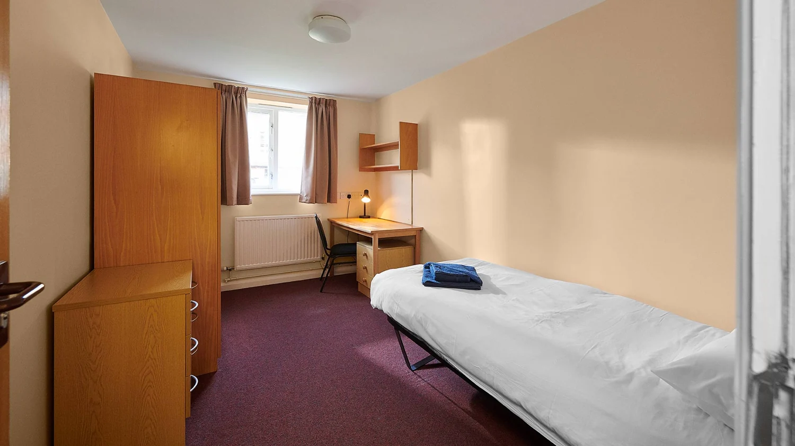
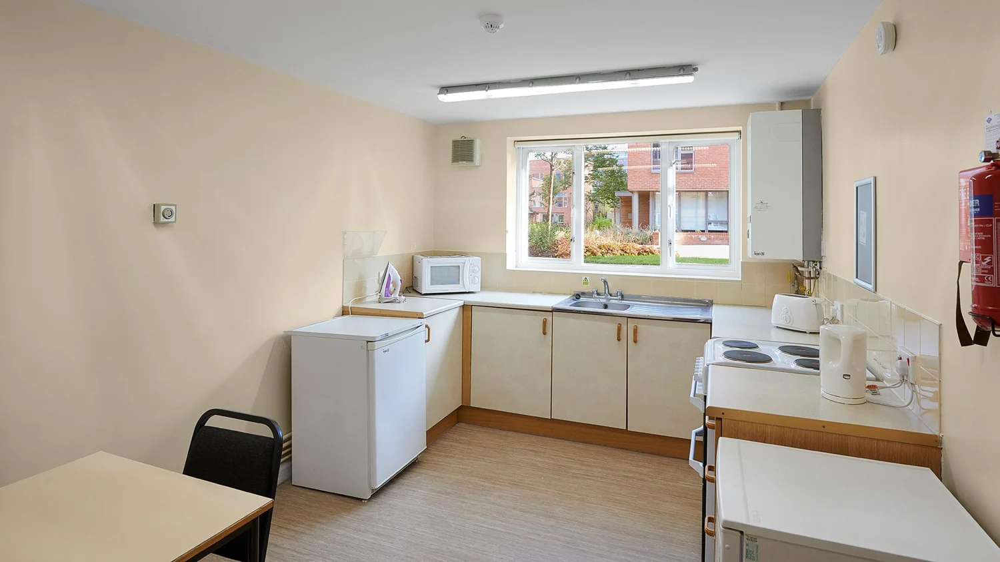
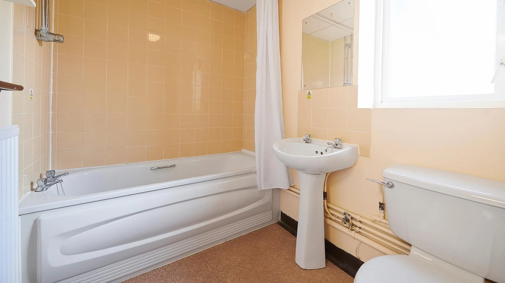
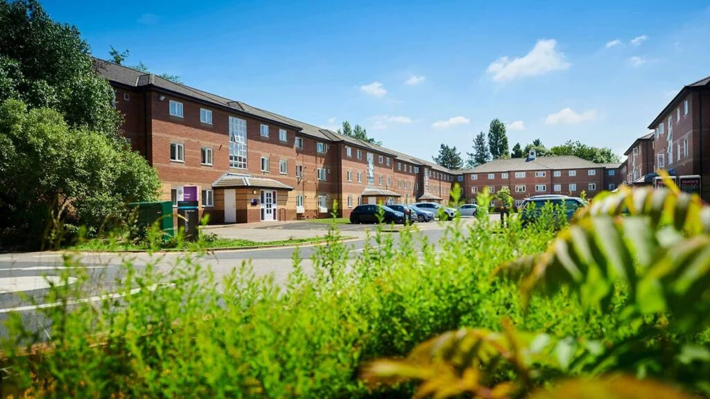
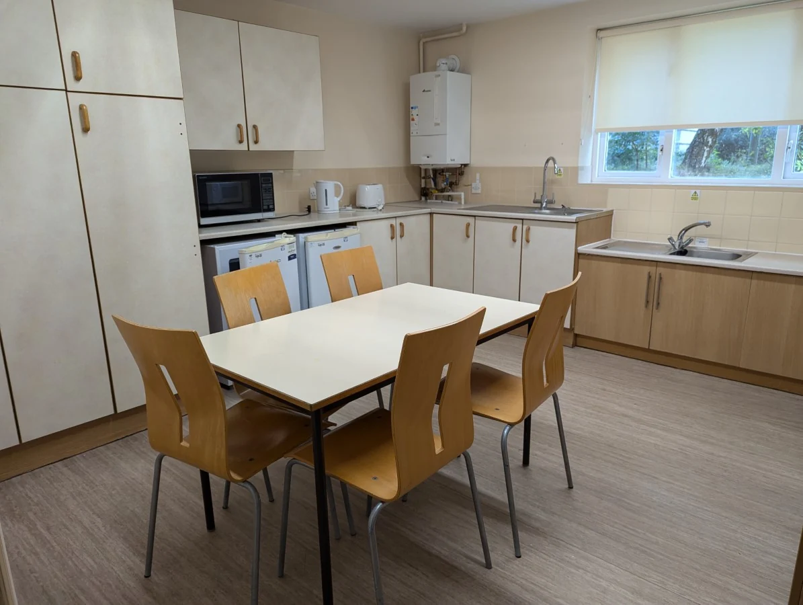
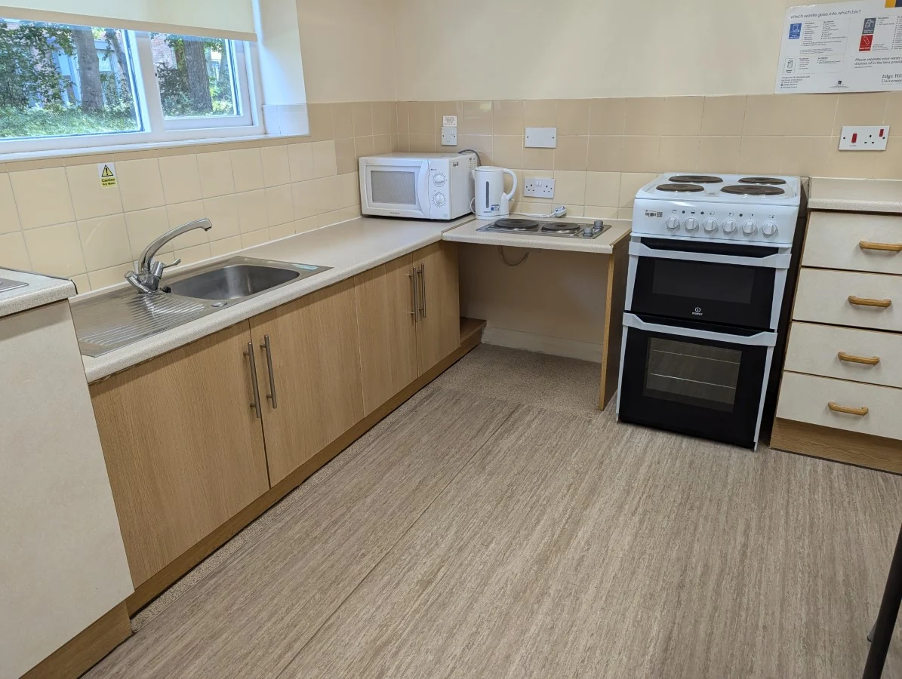
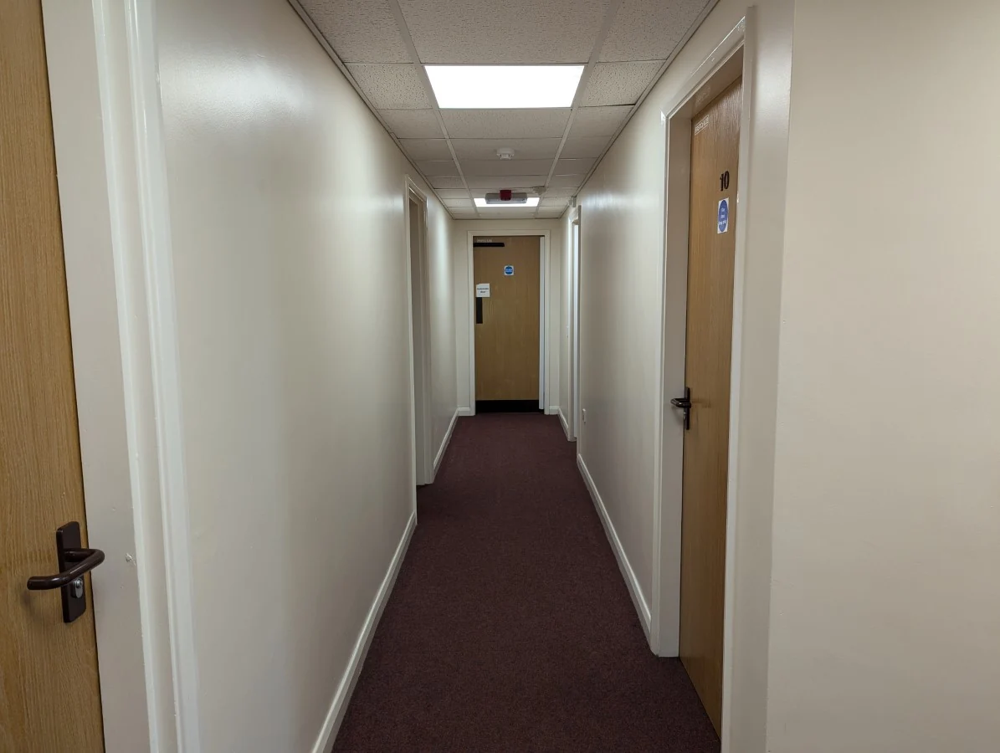
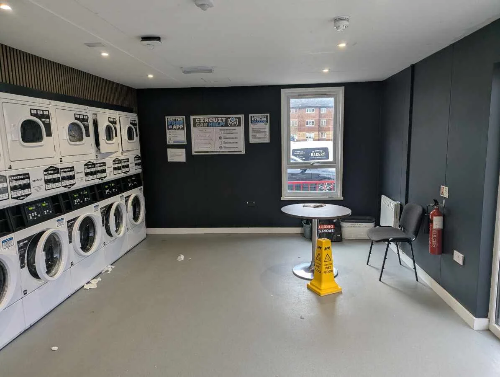
공용 욕실형은 보통 방 6개가 주방·식사 공간, 욕실 1개, 샤워실 1개, 화장실 2개를 같이 쓰고, 방마다 세면대가 있다. en-suite형은 방 안에 샤워실이 딸려 있다. 사진이 어느 유형인지는 각 사진 설명을 보면 된다.
공식 영상 투어는 공용 주방·생활 공간과 en-suite 객실을 소개한다.
| 구조 | 확인 내용 |
|---|---|
| Forest Court 공용 욕실형 | 개인 침실에 싱글 침대·책상·의자·수납·세면대. 보통 6개 방이 주방·식사 공간·욕실·샤워·화장실을 공유. |
| Forest Court en-suite형 | 개인 샤워·화장실, 공용 주방. 기본 패키지의 공용 욕실형과 구분. |
| 2026–27 일반 주당 요금 | 공용 욕실 £93 / en-suite £124, 공과금 포함. 일반 계약은 40주이며 교환 패키지 금액으로 그대로 곱하지 않음. |
| 실제 단국대 배정 | 2026 봄 후기 두 편에서 Forest Court. 2025 가을 후기는 남녀가 같은 플랫에 생활했다고 보고. |
| 방 변경 | 2025 가을 후기에는 다른 국제학생의 변경 사례가 있음. 2026 봄 작성자는 Forest Court에 남았고, 일부 유럽 학생이 Graduates Court를 사용했다고 기록. 본인의 이동 성공 사례는 아님. |
8.2. 같은 방·같은 플랫은 다르다
기본은 각자 1인실 계약이다. 같은 주방을 쓰는 플랫 안에 두 방을 배정해 달라고 지원번호를 연결해 문의할 수 있다. 공개된 친구 매칭 절차는 확인되지 않았다. 정규 교내 기숙사는 모두 1인 사용이며, 방문객용 The Hollies의 더블룸은 최대 5박이라 학기 대안이 아니다. 그래서 방 하나를 둘이 나눠 써서 돈을 아끼는 계산은 하지 않았다.
8.3. 서로 방문하고 자고 갈 수 있나?
기숙사 규정상 자고 가는 손님은 만 18세 이상 1명, 연속 2박까지, 다음 번은 5일 뒤부터 가능하다. 최소 3일 전에 신청해야 하고, 다른 기숙사에 사는 같은 학교 학생도 이 규정을 따른다. 방 주인 없이 손님만 방에 있으면 안 된다. 그러니 서로 방에서 자고 가는 걸로 사실상 같이 사는 건 어렵다.
학교 밖 방이 더 싸다고 먼저 계약하지 말고, 단국대 모집 조건에 기숙사 의무가 있는지부터 확인하자. McComb의 단기·그룹 문의와 Ormskirk 민간 플랫의 공시 가격을 공동거주 안내에 정리했다. 목표 학기 공실과 두 명의 단기 총액은 견적을 받아야 한다.
9. 숙식 패키지와 한 학기 비용목차로
2026년 봄 단국대 후기를 보면 기숙사와 식사를 합쳐 £2,960을 학교에 냈고, 학생증 UniCard에 매주 £50씩 식사 잔액이 들어왔다. 식사비가 이미 들어간 금액이니, 여기에 기숙사비나 식비를 따로 또 더하면 안 된다.
이건 지난 파견자가 실제로 낸 돈이고 2028년 금액은 아니다. 교환학생 패키지 요금은 학교가 소속 대학(단국대 국제처)을 통해 알려준다. 아래 표는 봄학기 약 4개월, 1명, 공용 욕실형 방을 기준으로 짠 예상 비용이다. 단국대 등록금과 따로 가는 여행은 뺐다.
| 항목 | 계산 가정 | 1 GBP=2,000원 시 |
|---|---|---|
| 숙소·식사 패키지 | 2026 봄 후기 £2,960 | 592만 원 |
| 추가 식재료·외식 | 학기 £700 · 식사 잔액 외 지출 | 140만 원 |
| 교통·통신 | 학기 £300 | 60만 원 |
| 생활용품·세탁·정착 | 학기 £200 | 40만 원 |
| 왕복 항공 | 계획값 | 180만 원 |
| 보험·ETA 등 | 계획값 · 현재 ETA £20 포함 | 30만 원 |
| 어학 응시 | DET 중심 계획 여유액 · 학원비 별도 | 20만 원 |
| 인상·환율·예비비 | 계획값 | 150만 원 |
| 합계 | 두 명은 각자 비용 합산 | 1,212만 원 / 두 명 2,424만 원 |
여행을 크게 다니지 않으면 1인 약 1,100~1,350만 원 정도로 볼 수 있다. 큰 여행을 간다면 100~300만 원 이상을 따로 잡자. 2026년 봄 후기의 총 1,800만 원은 여행이 포함된 금액이라 기본 생활비로 보지 않았다. 다른 후기의 약 3,000만 원에는 학기가 끝난 뒤 2개월 여행이 들어 있었다.
환율·새 패키지 금액으로 다시 계산
실시간 환율이 아니라 예상치다. 실제 고지서를 받으면 패키지 금액을 바꿔 넣으면 된다. 주 £50 식사 잔액은 패키지 안에 이미 포함된 거라 따로 빼서 계산하지 않는다.
1인 1,212만 원 · 두 명 2,424만 원
기본값에서 환율만 바꾸면 1파운드 1,800원일 때 약 1,129만 원, 2,200원일 때 약 1,295만 원이다. 방을 같이 써서 아끼는 할인은 넣지 않았다.
10. 파견 학기·정원·지원 가능성목차로
영국도 한국과 계절이 같다. 9~12월은 가을에서 초겨울, 1~5월은 겨울에서 봄으로 넘어가는 시기다. 영국은 가을에 새 학년이 시작해서 가을학기를 Semester 1, 봄학기를 Semester 2라고 부른다. 단국대와 학기 번호가 반대다.
| 항목 | 가을 파견 | 봄 파견 |
|---|---|---|
| 대략 체류 | 9월 하순–12월, 약 3개월 | 1월 중순–5월 중순, 약 4개월 |
| 2025–26 Study Abroad 안내 사례 | 도착 2025.09.22–23 / 수업 10.06–12.19 / 출국 12.20–21 | 도착 2026.01.15–16 / 수업 01.26–05.01 / 평가 05.05–15 / 출국 05.16–17 |
| 직접 성·젠더 과목 | 현재 한 학기 목록에서 아래 두 과목 확인 안 됨 | SPY3145 · REL3007 |
| 심리학 한 학기 목록 | 3과목 | 9과목 |
위 날짜는 단국대 모집 자료에 첨부된 2025–26 교환학생 안내서(Study Abroad & Exchange Information Sheet)에 나온 예시다. 2028년 항공권을 끊을 날짜는 아니다. 가을학기 안내서에는 12월에 귀국하니 시험이 없는 과목을 고르라는 설명이 있다. 그런데 지금 과목 목록에는 귀국 후 1월에 온라인으로 시간제한 평가를 보는 과목도 있으니, 가는 학기 안내서의 평가 날짜를 꼭 확인하자. 유럽 학생용(Erasmus) 2026–27 안내서는 다른 경로라서 참고만 했다.
| 단국대 모집 사례 | 모집 인원 | 해석 |
|---|---|---|
| 2027년 봄 최초 | 4명 | 둘이 같은 차수에 지원할 수 있는 정원 규모 |
| 2027년 봄 2차 | 1명 | 추가모집 이력은 있지만, 이 차수만으로 두 명 동반 선발은 불가 |
| 2026년 가을 최초 | 2명 | 두 명 지원 가능 규모. 실제 경쟁률·합격선 자료는 확보하지 않음 |
매번 미달이라 둘 다 쉽게 붙는 학교라고 보기는 어렵다. 첫 모집 정원이 4명이었던 적도 있고 추가모집도 있었지만, 추가모집 때 남은 자리가 1명뿐이었던 적도 있다. 둘이 같이 가려면 첫 모집에서 각자 어학·학점 조건을 채워서 붙어야 한다. GPA 2.75는 Edge Hill이 요구하는 최소 기준이고, 단국대 선발에서 실제 붙는 점수는 아니다.
11. 어학과 신청 절차목차로
지금 기준으로 준비할 시험은 DET 105점 또는 IELTS 6.0이다. 단국대 2026년 가을 모집 자료와 Edge Hill 공식 기준을 같이 확인했다.
| 시험 | 확인한 요건 | 적용 근거 |
|---|---|---|
| Duolingo English Test | 105 · 네 영역 각각 100 이상 | 단국대 2026-2 저장본·공식 일반 학부 안내 |
| IELTS Academic | 6.0 · 각 영역 5.5 이상 | 단국대 저장본·공식 일반 학부 안내 |
| TOEFL iBT 구 점수체계 | 공식 총점 78 · R18/L19/S19/W21 | 단국대 저장본에는 영역별 점수 표기 |
| TOEFL iBT 새 점수체계 | 2026.01.21 이후 공식 총점 4 · 각 영역 4 | Edge Hill 일반 안내. 해당 파견학기 단국대 표와 대조 |
| TOEIC | 2025 가을·2026 봄 파견후기에 제출 경험 있음 | 2026 가을 모집 자료에는 없음. 지금도 인정된다고 보기 어려움 |
| TOEFL ITP | 확인한 Edge Hill 모집표에 없음 | UPEI가 ITP를 받는 것과는 별개 |
토익으로 갔다는데 왜 현재 경로에는 넣지 않았나?
단국대 후기 두 편은 토익 점수로 지원했다고 적었다. 2025년 가을 후기는 그때 토익을 인정하는 학교가 새로 생겼다고 했다. 그런데 그다음 2026년 가을 모집 자료에는 DET, IELTS, TOEFL iBT만 있다. 한 번 인정된 시험이 매 학기 계속 인정되는 건 아니다. 나중 모집 자료에 토익이 다시 나오면 그때 토익을 써도 된다. 후기에서 토익 최소 점수는 확인되지 않아서 따로 적지 않았다.
비용과 시험 방식을 생각하면 Edge Hill만 노린다면 DET부터 준비해 볼 만하다. UPEI도 같이 생각한다면 두 가지 방법이 있다. UPEI는 TOEFL ITP 550, Edge Hill은 DET 105로 따로 준비하거나, 두 학교 모두 받는 IELTS로 더 높은 쪽 점수를 목표로 하는 것이다. DET도 말하기와 쓰기가 있어서, 점수 숫자만 보고 ITP보다 쉽다고 단정하긴 어렵다.
11.1. 신청 순서
- 단국대 선발 → 추천: 해당 학기 모집표에 적힌 어학·정원·학점 기준으로 지원한다.
- Edge Hill 온라인 지원: 추천 후 받은 안내에 따라 영문 성적표, 여권, 어학 자료와 자기소개서를 제출한다. 2025–26 안내의 Personal Statement는 250–300단어였다.
- 과목·숙소 신청: 수강 후보를 우선순위로 적고 숙소 계약·패키지 청구서를 확인한다.
- 입국·보험·픽업: 학기별 입실 날짜와 평가 종료일을 기준으로 항공편을 정한다.
2025년 가을 후기는 면접을 봤다고 했고, 2026년 봄 후기는 면접 없이 어학, 학점, 가산점으로만 뽑혔다고 했다. 면접이 있는지는 그해 단국대 모집 공고를 보면 된다.
12. 입국과 출국 준비목차로
한국 여권으로 6개월 이내 교환학생을 가는 경우, ETA를 받고 방문자 자격으로 입국했다. ETA는 비자나 입학허가서가 아니다. 지금 신청 비용은 £20이고, 신청한 여권에 연결된다.
- 학기·기숙사 날짜 확인: 입실 가능일과 마지막 평가일을 포함해 체류를 잡는다.
- 서류 준비: 여권, 입학허가서, 숙소 주소·계약, 귀국 일정, 보험증서를 정리한다.
- 보험: 영국 체류와 계획한 주변 국가 여행을 포함하는지 상품 조건을 확인한다. 패키지에 의료보험이 자동 포함됐다고 계산하지 않는다.
- 도착: 픽업 신청을 했으면 확인 메일의 공항·만남 장소·시간을 따른다.
- 귀국: 성적표 발급·단국대 학점 인정·파견후기 제출 절차를 마무리한다.
현지 아르바이트 수입은 비용 계산에 넣지 않았다. 한 학기 방문자 자격으로 가는 것과 장기 학생비자(Student visa)는 머물 수 있는 기간과 일할 수 있는 조건이 다르다.
단국대 후기에는 학교 공항 픽업을 이용한 사례가 있다. 맨체스터나 리버풀 공항 도착 시간을 학교가 알려주는 픽업 날짜·시간에 맞추면 기숙사 입주가 편하다. 신청하면 오는 메일에서 공항, 만나는 곳, 시간을 확인하자.
13. 용어와 곁가지 설명목차로
- UK credits — 영국 학점이다. 이 가이드의 학부 한 과목 20 UK credits를 단국대 20학점으로 해석하면 안 된다. 학점 인정은 별도로 환산한다.
- 랭커셔 — Lancashire. 리버풀 북쪽의 주(州) 이름이다. 한국으로 치면 도(道)에 가까운 행정구역이다.
- GMT — 그리니치 표준시. 영국의 겨울 시간이다. 한국보다 9시간 늦다.
- BST — British Summer Time, 영국 서머타임. 3월 말~10월 말에 쓰며 한국보다 8시간 늦다.
- Catalyst — Catalyst는 일반 영어로 ‘촉매’라는 뜻이지만 여기서는 대학 도서관과 학생지원 부서가 함께 있는 건물 이름이다.
- 펍 — pub. 영국식 술집 겸 식당이다. 술을 안 마셔도 점심이나 저녁을 먹으러 가는 곳이다.
- Costa — Costa Coffee. 영국에서 가장 흔한 카페 체인이다.
- Morrisons — 영국의 대형 슈퍼마켓 체인. 캠퍼스 안에는 편의점 크기 매장이 있다.
- UniCard — UniCard는 Edge Hill 학생증이다. 신분 확인, 일부 건물 출입, 도서관 이용, 교내 결제 등 여러 기능을 한 카드에 묶었다. Study Abroad 식사 패키지 잔액과 개인이 충전한 돈은 조건을 구분해 읽는다.
- Poundland — 모든 물건을 1파운드 안팎에 파는 영국 균일가 생활용품점. 한국의 다이소와 비슷하다.
- Aldi — 독일계 저가 슈퍼마켓 체인. 영국에서 싼 편에 속한다.
- M&S — Marks & Spencer. 품질 좋고 조금 비싼 편인 영국 백화점·식품 체인이다.
- 단위가격 — Unit price는 100g, 1kg, 1L처럼 같은 단위로 환산한 가격이다. 포장 크기가 다른 제품을 비교할 때 진열대의 작은 단위가격을 보면 편하다.
- EdgeLink EL1 — 학교가 운영하는 무료 셔틀버스 노선 이름이다.
- Palatine Court — Forest Court 옆의 다른 기숙사 단지 이름이다.
- Creative Edge — 미디어·컴퓨터 계열 학과가 쓰는 캠퍼스 건물 이름이다.
- Bank Holiday — Bank Holiday는 영국의 공휴일을 뜻한다. 은행만 쉬는 날이라는 의미가 아니며, 버스·상점·학교 시설의 운영시간도 평일과 달라질 수 있다.
- Liverpool Central — 리버풀 시내 한가운데 있는 지하철·근교열차 역이다. 쇼핑가와 가깝다.
- Student Life Portal — 학교가 운영하는 학생 활동·행사 안내 사이트다.
- Students’ Union — 학생회. 동아리와 학생 행사를 운영하는 학생 단체다.
- Crosby — 리버풀 북쪽 해안 마을. 영국 기상청 관측소가 있어서 이 지역 기후 자료로 썼다.
- EHU — Edge Hill University의 줄임말이다.
- 오픈마이크 — open mic. 누구나 신청해서 무대에 올라 노래, 시, 코미디 등을 짧게 선보이는 행사다.
- 시장 이름 구분 — 영국에서 market은 노점이 서는 정기 시장뿐 아니라 여러 식당이 입점한 실내 푸드홀 이름에도 쓰인다. 두 장소의 영업일과 분위기가 다르다.
- Moorgate — 옴스커크 시내의 거리 이름이다.
- Chester — 리버풀 남쪽의 로마 시대 성벽이 남아 있는 옛 도시다.
- Windermere — 영국 북부 호수 지역(Lake District)에 있는 가장 큰 호수와 그 주변 마을이다.
- Blackboard — 학교 온라인 강의 시스템. 한국 대학의 e-캠퍼스와 같은 역할이다.
- EHRC — 영국 평등인권위원회(Equality and Human Rights Commission). 2025년 대법원 판결 이후 화장실·탈의실 같은 남녀 구분 공간을 생물학적 성별 기준으로 운영하라는 지침을 냈고, 2026년 8월부터 시행됐다.
- Module Catalogue — 교환학생이 고를 수 있는 과목만 모아 둔 공식 목록이다. 정규 학생용 과목 소개와 다르다.
- 세미나 — Seminar는 소규모 토론·발표·읽기 활동을 하는 수업 형식이다. 교수가 설명하는 lecture와 함께 시간표에 배치되는 경우가 있다.
- TLA — Time-Limited Assessment의 약자. 정해진 제한 시간 안에 답안을 내는 평가이며, 온라인이어도 아무 때나 제출하는 과제와는 다르다.
- Full Year — 가을과 다음 봄을 이어서 듣는 연간 과목이다. 이름에 두 학기가 보인다고 어느 한 학기만 골라 듣는 과목이라는 뜻은 아니다.
- Level 5 — 영국 학부 2학년 수준을 말한다. Level 4가 1학년, Level 6이 3학년이다.
- Erasmus — 유럽연합의 교환학생 프로그램. 단국대 학생은 이 경로가 아니라 Study Abroad 경로로 간다.
- AccessAble — 영국 장애인 접근성 정보 단체. 건물을 직접 조사해 사진과 함께 공개한다.
- en-suite — 침실에 전용 샤워실·화장실이 딸린 구조다. 전용 주방까지 있다는 뜻은 아니며 주방은 플랫 사람들과 공유하는 경우가 많다.
- 플랫 — Flat은 여러 침실과 공용 공간으로 이루어진 주거 단위다. 같은 플랫의 각자 방을 쓰는 것과 침실 하나를 함께 쓰는 것은 다르다.
- DET — Duolingo English Test. 집에서 온라인으로 보는 영어 시험이다. 응시료가 US$70로 싸고 결과가 이틀 안에 나온다.
- IELTS — 영국식 공인 영어 시험. Academic 유형을 봐야 한다. 듣기·읽기·쓰기·말하기 네 영역을 각각 9점 만점으로 매긴다.
- ETA — Electronic Travel Authorisation. 영국에 방문자로 들어가기 전에 온라인으로 받는 전자 여행 허가다. 비자는 아니다.
14. 후기와 출처목차로
본문의 작은 [숫자]를 누르면 용어 설명이나 곁가지 정보가 나온다. 출처는 아래 주제별 목록과 각 절 끝의 '자료와 확인 범위'에 있다. 공식 안내, 지난 파견 후기, 이 가이드에서 만든 예시를 구분해서 적었다.
단국대 국제처 게시판 글 677건 중 제목에 Edge가 들어간 글은 7건이었다. 이 가이드는 그중 2026년 봄 2편과 2025년 가을 1편을 읽고 반영했다. 677건을 다 읽거나 통계를 낸 건 아니다. 작성자 이름과 연락처는 옮기지 않았다.
| 후기 | 생활에서 확인한 핵심 | 비용 해석 |
|---|---|---|
| 2026 봄 A | 토익 지원·Forest Court 6인 플랫·주 £50 식사·버디 참여 | 숙식 £2,960 / 여행 포함 총 약 1,800만 원 |
| 2026 봄 B | Forest Court·빈방이 있을 때 숙소 업그레이드·에세이 지원 | 약 3,000만 원에는 학기 뒤 2개월 여행 포함 |
| 2025 가을 | 토익 지원·남녀 혼합 플랫·3과목 수강 | 약 2,000만 원 이상에 학비·여행 포함: 위 기본예산과 직접 비교하지 않음 |
공식 설명은 사실 요약, 후기 내용은 시점이 있는 개인 경험, 비용 모델·과목 이해용 예시는 편집자의 구성으로 구분했다. 아래 링크는 원문으로 연결되며 단국대 후기는 로그인이 필요할 수 있다.